Elektronische Gesundheitskarte und Telematikinfrastruktur
Spezifikation
TI-Messenger-Dienst
| Version | 1.1.0 |
| Revision | 567556 |
| Stand | 29.07.2022 |
| Status | in Bearbeitung |
| Klassifizierung | öffentlich |
| Referenzierung | gemSpec_TI-Messenger-Dienst |
Änderungen zur Vorversion
Anpassungen des vorliegenden Dokumentes im Vergleich zur Vorversion können Sie der nachfolgenden Tabelle entnehmen.
Dokumentenhistorie
| Version |
Stand |
Kap./ Seite |
Grund der Änderung, besondere Hinweise |
Bearbeitung |
|---|---|---|---|---|
| 1.0.0 | 01.10.2021 | Erstversion des Dokumentes | gematik | |
| 1.1.0 | 29.07.2022 | Überarbeitung folgender Features: – Erreichbarkeit einzelner Organisationseinheiten mittels Funktionsaccounts – Öffnung des TI-Messengers für Drittsysteme durch clientseitige Schnittstellen zur Integration z.B. ins Praxisverwaltungssystem – schnelles Finden von Kontaktdaten durch Zugriff auf FHIR-basiertes Adressbuch |
gematik | |
| 16.08.22 | Möglichkeit einer Art Zugriffskontrolle für Org-Admin |
Beim vorliegenden Dokument handelt es sich um die Festlegungen zur ersten Ausbaustufe des TI-Messengers. Diese Ausbaustufe ist definiert durch die Ad-hoc-Kommunikation zwischen Organisationen des Gesundheitswesens. Dabei wird insbesondere die Ad-hoc-Kommunikation zwischen Leistungserbringern bzw. zwischen Leistungserbringerinstitutionen betrachtet. Festlegungen zur Nutzergruppe der Versicherten und Anforderungen an Krankenversicherungsorganisationen werden in der zweiten Ausbaustufe des TI-Messengers Berücksichtigung finden und daher im vorliegenden Dokument nicht weiter betrachtet.
Dieses Dokument beschreibt basierend auf den Anforderungen des Konzeptpapiers TI-Messenger [gemKPT_TI_Messenger] die systemspezifische Lösung des TI-Messengers des deutschen Gesundheitswesens. An dieser Stelle werden insbesondere die Anforderungen des Konzeptes in Form von definierten Anwendungsfällen zu Herstellung, Test und Betrieb des TI-Messenger-Dienstes beschrieben. Die jeweiligen Anwendungsfälle beschreiben den gesamten, für die Erfüllung notwendigen, Prozess und benennen alle für die Umsetzung notwendigen Teilkomponenten. Die weitere funktionale Spezifikation erfolgt in der jeweiligen dedizierten Spezifikation des Produkttyps.
Die vorliegende Spezifikation ist als funktionale Einheit mit der jeweils auf einen konkreten Produkttyp bezogenen Spezifikation zu betrachten.
Das Dokument richtet sich zum Zwecke der Realisierung an Hersteller von Produkttypen des TI-Messengers sowie an Anbieter, welche die beschriebenen Produkttypen betreiben. Alle Hersteller und Anbieter von TI-Anwendungen, deren Schnittstellen einen der Produkttypen des TI-Messengers nutzen, oder Daten mit den Produkttypen des TI-Messengers austauschen oder solche Daten verarbeiten, müssen dieses Dokument ebenso berücksichtigen.
Dieses Dokument enthält normative Festlegungen zur Telematikinfrastruktur des deutschen Gesundheitswesens. Der Gültigkeitszeitraum der vorliegenden Version und deren Anwendung in Zulassungs- oder Abnahmeverfahren wird durch die gematik GmbH in gesonderten Dokumenten (z. B. gemPTV_ATV_Festlegungen, Produkttypsteckbrief, Anbietertypsteckbrief, u.a.) oder Webplattformen (z. B. gitHub, u.a.) festgelegt und bekanntgegeben.
Schutzrechts-/Patentrechtshinweis
Die nachfolgende Spezifikation ist von der gematik allein unter technischen Gesichtspunkten erstellt worden. Im Einzelfall kann nicht ausgeschlossen werden, dass die Implementierung der Spezifikation in technische Schutzrechte Dritter eingreift. Es ist allein Sache des Anbieters oder Herstellers, durch geeignete Maßnahmen dafür Sorge zu tragen, dass von ihm aufgrund der Spezifikation angebotene Produkte und/oder Leistungen nicht gegen Schutzrechte Dritter verstoßen und sich ggf. die erforderlichen Erlaubnisse/Lizenzen von den betroffenen Schutzrechtsinhabern einzuholen. Die gematik GmbH übernimmt insofern keinerlei Gewährleistungen.
In diesem Dokument werden die übergreifenden Anforderungen in Form von Anwendungsfällen spezifiziert. Die Funktionsmerkmale, die für die hier beschriebenen Anwendungsfälle genutzt werden, werden in den Spezifikationen der einzelnen Produkttypen des TI-Messenger-Dienstes weiter definiert.
Die vom TI-Messenger-Dienst bereitgestellten Schnittstellen werden in den Spezifikationen der einzelnen Komponenten des TI-Messenger-Dienstes definiert. Von anderen Produkttypen benutzte Schnittstellen werden hingegen in der Spezifikation desjenigen Produkttypen beschrieben, der diese Schnittstelle bereitstellt. Auf die entsprechenden Dokumente wird referenziert.
Die vollständige Anforderungslage für den TI-Messenger-Dienst ergibt sich aus mehreren Spezifikationsdokumenten. Diese sind in den einzelnen Produkt- und Anbietertypsteckbriefen des TI-Messengers verzeichnet.
Die Spezifikation ist im Stil einer RFC-Spezifikation verfasst. Dies bedeutet:
Anwendungsfälle und Akzeptanzkriterien als Ausdruck normativer Festlegungen werden als Grundlage für Erlangung der Zulassung durch Tests geprüft und nachgewiesen. Sie besitzen eine eindeutige, permanente ID, welche als Referenz verwendet werden SOLL. Die Tests werden gegen eine von der gematik gestellte Referenz-Implementierung durchgeführt.
Anwendungsfälle und Akzeptanzkriterien werden im Dokument wie folgt dargestellt:
<ID> - <Titel des Anwendungsfalles / Akzeptanzkriteriums>
Text / Beschreibung
[<=]
Die einzelnen Elemente beschreiben:
Dabei umfasst der Anwendungsfall bzw. das Akzeptanzkriterium sämtliche zwischen ID und Textmarke [<=] angeführten Inhalte.
Der für die Erlangung einer Zulassung notwendige Nachweis der Erfüllung des Anwendungsfalls wird in den jeweiligen Steckbriefen festgelegt, in denen jeweils der Anwendungsfall gelistet ist. Akzeptanzkriterien werden in der Regel nicht im Steckbrief gelistet.
Hinweis auf offene Punkte
| Offener Punkt: Das Kapitel wird in einer späteren Version des Dokumentes ergänzt. |
Der sichere Nachrichtenaustausch zwischen beteiligten Akteuren des deutschen Gesundheitswesens erfolgt über die von TI-Messenger-Anbietern bereitgestellten TI-Messenger-Fachdienste und TI-Messenger-Clients. Die Ad-Hoc Kommunikation zwischen den Akteuren findet hierbei über zugelassene TI-Messenger-Clients statt. Die Produkttypen TI-Messenger-Fachdienst sowie TI-Messenger-Client werden durch von der gematik zugelassene TI-Messenger-Anbieter bereitgestellt.
Ein TI-Messenger-Fachdienst besteht aus einem oder mehreren Messenger-Services (basierend auf dem Matrix-Protokoll) die jeweils für eine Organisation (SMC-B-Inhaber) des Gesundheitswesens bereitgestellt werden. Diese unterscheiden sich lediglich in der Art des verwendeten Authentifizierungsverfahrens. Akteure, die zugehörig zu einer Organisation agieren, KÖNNEN den durch diese Organisation bereitgestellten Messenger-Service verwenden und die innerhalb dieser Organisation bereits eigesetzten Authentifizierungsmethoden nachnutzen. Dies ermöglicht eine nahtlose Integration in den Alltag. Akteure, die nicht zugehörig zu einer Organisation agieren, KÖNNEN Messenger-Services von Verbänden nutzen, falls diese durch einen Verband für ihre Mitglieder zur Verfügung gestellt werden. Hierbei kann das bestehende Authentifizierungsverfahren des Verbandes verwendet werden. Messenger-Services KÖNNEN mit unterschiedlichen TI-Messenger-Clients verwendet werden. So ist es beispielweise möglich, dass ein Arzt, der parallel in einer Klinik und in einer niedergelassenen Praxis tätig ist, durch beide Organisationen jeweils einen Messenger-Service zur Verfügung gestellt bekommt.
Die Messenger-Services des TI-Messenger-Dienstes werden in einer TI-Föderation zusammengefasst, um nicht zugehörige Messenger-Dienste auszuschließen. Um Teil der Föderation des TI-Messenger-Dienstes zu werden, MUSS die jeweilige Domain eines Messenger-Services vom TI-Messenger-Anbieter durch den Registrierungs-Dienst des TI-Messenger-Fachdienstes im VZD-FHIR-Directory hinterlegt werden. Ist dies erfolgt, erhalten dessen Akteure Lesezugriff auf das VZD-FHIR-Directory und KÖNNEN je nach Berechtigung die Kommunikation mit Akteuren in anderen Organisationen starten. Die Kommunikation findet dabei Ende-zu-Ende-verschlüsselt zwischen den jeweiligen beteiligten Messenger-Services und TI-Messenger-Clients statt. Die Adressierung der Akteure innerhalb eines Messenger-Services erfolgt über die Matrix-User-ID und wird im Kontext des TI-Messenger-Dienstes als MXID bezeichnet. Um die beteiligten Akteure über den Eingang neuer Nachrichten zu informieren, MUSS der TI-Messenger-Fachdienst über ein Push-Gateway verfügen.
In der folgenden Abbildung sind alle beteiligten Komponenten der TI-Messenger-Architektur dargestellt:
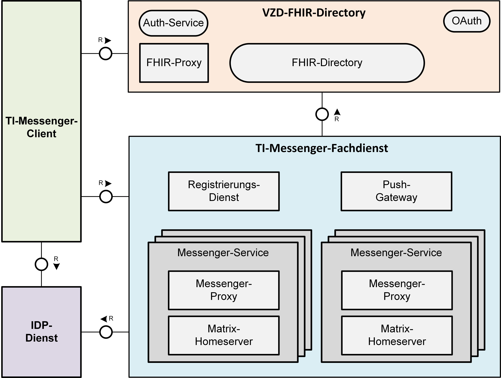
Abbildung 1: Komponenten der TI-Messenger-Architektur (vereinfachte Darstellung)
Der TI-Messenger-Dienst basiert auf dem offenen Kommunikationsprotokoll Matrix, das bereits von der Matrix Foundation gemäß [Matrix Specification] spezifiziert ist. In den von der Matrix Foundation erstellten Spezifikationen ist sowohl die Client-Server- , die Server-Server-Kommunikation als auch die API des Matrix-Push-Gateways beschrieben. Für die Sicherstellung der föderalen und dezentralen Struktur des TI-Messenger-Dienstes im deutschen Gesundheitswesen und zur Einschränkung des Nutzerkreises werden weitere Komponenten benötigt, welche in der jeweiligen durch die gematik veröffentlichten Spezifikation beschrieben werden.
Im Kontext des TI-Messenger-Dienstes werden verschiedene Akteure und Rollen definiert. Ein Akteur ist eine natürliche Person (Leistungserbringer / Mitarbeiter einer Organisation im Gesundheitswesen) oder ein technisches System (Chatbot) die mit einem TI-Messenger-Fachdienst interagieren. Abhängig von dem verwendeten Authentifizierungsverfahren am Messenger-Service eines TI-Messenger-Fachdienstes ergeben sich unterschiedliche Rollen, die ein Akteur einnehmen kann. Im Folgenden werden diese Rollen weiter beschrieben.
Rolle: "User"
Die Rolle "User" kann von einem Leistungserbringer sowie von einem Mitarbeiter im Gesundheitswesen eingenommen werden. Die Authentifizierung des Akteurs erfolgt hierbei nicht über eine SMC-B oder einen HBA, sondern über ein vom Messenger-Service bereitgestelltes Authentifizierungsverfahren. Für einen Akteur in der Rolle "User" KANN dessen MXID im Organisationsverzeichnis auf dem VZD-FHIR-Directory hinterlegt werden, um für Akteure außerhalb seiner Organisation auffindbar zu werden. Chatbots zur Abbildung von Funktionsaccounts nehmen ebenfalls die Rolle "User" ein und werden im Kapitel näher beschrieben.
In dieser Rolle kann ein Akteur:
Rolle: "User-HBA"
Die Rolle "User-HBA" kann ausschließlich von einem Leistungserbringer eingenommen werden. Die Authentifizierung des Akteurs erfolgt hierbei über seinen HBA. Ein Akteur in der Rolle "User-HBA" KANN seine MXID im Personenverzeichnis im VZD-FHIR-Directory hinterlegen, damit andere Akteure in der Rolle "User-HBA", die ebenfalls die eigene MXID auf dem VZD-FHIR-Directory hinterlegt haben, ihn kontaktieren können.
In dieser Rolle kann ein Akteur:
Rolle: "Org-Admin"
Die Rolle "Org-Admin" stellt eine besondere Rolle im TI-Messenger Kontext dar. Leistungserbringer oder Mitarbeiter einer Organisation können diese Rolle einnehmen, nachdem sie ihre Organisation zuvor erfolgreich am Registrierungs-Dienst unter Verwendung ihrer SMC-B authentifiziert haben (siehe Anwendungsfall "10103 - Authentisieren einer Organisation am TI-Messenger Dienst"). Nach der erfolgreichen Authentifizierung wird ein Admin-Account am Registrierungs-Dienst vom TI-Messenger-Fachdienst angelegt. Mit der Anmeldung am Registrierungs-Dienst über den Admin-Account nimmt ein Akteur die Rolle "Org-Admin" ein. Dieser KANN Messenger-Services für seine Organisation registrieren und Einträge im VZD-FHIR-Directory verwalten. Für die Rolle "Org-Admin" besteht die Notwendigkeit, Administratoren einzusetzen, welche für Themen der Informationssicherheit geschult und sensibilisiert wurden. Ebenfalls ist es möglich, dass die Organisation den TI-Messenger-Anbieter beauftragt, die Rolle "Org-Admin" zu übernehmen.
In dieser Rolle kann ein Akteur:
Die folgende Tabelle "Akteure und Rollen" gibt einen Überblick über die im Kontext des TI-Messenger-Dienstes definierten Rollen, abhängig vom verwendeten Authentifizierungsverfahren, die ein Akteur einnehmen kann. Die Tabelle stellt alle möglichen Nutzerszenarien nach der Authentisierung mit Hilfe der SMC-B und erfolgreicher Authentifizierung einer Organisation am Registrierungs-Dienst dar.
Tabelle 1 Akteure und Rollen
| Welcher Akteur bin ich |
Wie authentisiere ich mich |
Welcher Dienst authentifiziert mich |
Welche Rolle nehme ich ein |
|---|---|---|---|
| Leistungserbringer (z. B. Ärzte, Zahnärzte, Apotheker, psychologische Psychotherapeuten, Pflegepersonal, Hebammen, Mitarbeiter einer Kasse) im Sinne SGB V |
HBA | VZD-FHIR-Directory | User-HBA |
| Authentifizierungsverfahren der Organisation | Messenger-Service | User | |
| Admin-Account Credentials |
Registrierungs-Dienst | Org-Admin | |
| Mitarbeiter einer Organisation im Gesundheitswesen, die keine Leistungserbringer im Sinne SGB V sind. |
Authentifizierungsverfahren der Organisation |
Messenger-Service | User |
| Admin-Account Credentials |
Registrierungs-Dienst | Org-Admin | |
| Beauftragter Administrator eines TI-Messenger-Anbieters |
Admin-Account Credentials | Registrierungs-Dienst | Org-Admin |
| Chatbot | Authentifizierungsverfahren der Organisation | Messenger-Service | User |
Hinweis: Versicherte DÜRFEN aktuell NICHT als Akteure auf einem Messenger-Service eingetragen werden. Für die Nutzung eines Messenger-Service sind nur Akteure zugelassen, die durch ein bestehendes Vertragsverhältnis der jeweiligen Organisation zugeordnet werden können oder im Besitz eines HBAs sind.
Im Folgenden wird die Kommunikation für eingehende und ausgehende Nachrichten aus der Sicht eines Akteurs in den verschiedenen Rollen in einer Kommunikationsmatrix verdeutlicht.
Tabelle 2: Kommunikationsmatrix
| Org-Admin | User | User-HBA | Kommunikationsart |
|---|---|---|---|
Ausgehende Kommunikation an: |
|||
| x | x | x | Akteure in der Rolle "User" innerhalb seiner Organisation |
| - | x | x | Akteure in der Rolle "User" außerhalb seiner Organisation |
| - | - | x | Akteure in der Rolle "User-HBA" außerhalb seiner Organisation |
| - | x | x | Akteure in der Rolle "User" und "User-HBA" durch Scan eines QR-Codes |
Eingehende Kommunikation von: |
|||
| x | x | x | Akteuren in der Rolle "User" innerhalb seiner Organisation |
| - | x | - | Akteuren in der Rolle "User" außerhalb seiner Organisation |
| - | - | x | Akteure in der Rolle "User-HBA" außerhalb seiner Organisation |
| - | x | x | Akteuren in der Rolle "User" und "User-HBA" durch Scan eines QR-Codes |
Die folgende Abbildung zeigt die benachbarten Produkttypen des TI-Messenger-Dienstes:
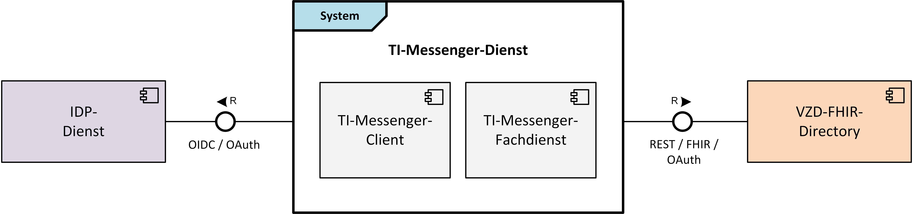
Abbildung 2: Benachbarten Produkttypen des TI-Messenger-Dienstes
Der TI-Messenger-Dienst als System besteht aus den Komponenten TI-Messenger-Fachdienst und TI-Messenger-Client.
Der Registrierungs-Dienst des TI-Messenger-Fachdienstes nutzt die OAuth- und REST-Schnittstellen des VZD-FHIR-Directory, um sich mittels OAuth Client Credential Flow zu authentisieren um somit Zugriff auf das FHIR-Directory zu erhalten. Der TI-Messenger-Client nutzt die Schnittstellen eines zuständigen IDP-Dienstes zur Authentifizierung eines Akteurs sowie Schnittstellen des VZD-FHIR-Directory, um z. B. FHIR-Ressourcen zu finden oder zu ändern.
Der Messenger-Service ist eine Teilkomponente des TI-Messenger-Fachdienstes und wird durch den jeweiligen Anbieter für Organisationen bereitgestellt. Der Messenger-Service besteht aus einem Matrix-Homeserver (basierend auf dem Matrix-Protokoll) und einem Messenger-Proxy der sicherstellt, dass eine Kommunikation mit anderen Messenger-Services, als Teil des TI-Messenger-Dienstes, nur innerhalb der gemeinsamen TI-Föderation erfolgt. Die Messenger-Services KÖNNEN den Akteuren unterschiedliche Authentifizierungsverfahren anbieten, bei denen der Besitz einer SMC-B oder eines HBAs nicht vorausgesetzt wird. Messenger-Services MÜSSEN immer Organisationen bzw. Verbänden zugeordnet sein, die über die Kontrolle des verwendeten Authentifizierungsverfahren verfügen.
Abhängig vom jeweiligen Messenger-Service gibt es verschiedene Abläufe bei der Anmeldung an einem TI-Messenger-Fachdienst. Dabei können diverse Authentifizierungsmechanismen durch eine Organisation für Ihre Akteure bereitgestellt werden. Die Organisation und der von ihr gewählte TI-Messenger-Anbieter vereinbaren das zur Anwendung kommende Authentifizierungsverfahren bilateral und stimmen sich über die technische Realisierung der dafür notwendigen Anbindung ab. Möglich ist beispielsweise die Nachnutzung eines in der Organisation betriebenen Active Directory (AD/LDAP) oder eines geeigneten Single-Sign-On-Verfahrens (SSO). Der Anbieter MUSS sicherstellen, dass die Organisation die Kontrolle über die jeweiligen Authentifizierungsmechanismen besitzt und die Möglichkeit erhält eine notwendige Löschung oder Sperrung eines Nutzer-Accounts sicherzustellen.
Zum besseren Verständnis werden im Folgenden verschiedene, beispielhafte Anwendungsszenarien für den TI-Messenger skizziert und mögliche Ausprägungen eines Messenger-Service erläutert. Es besteht hierbei kein Anspruch auf Vollständigkeit :
Anwendungsbeispiel für eine Arztpraxis
Die folgenden User Stories sollen die Bedarfe von niedergelassenen Leistungserbringern an asynchrone Ad-hoc-Kommunikation beispielhaft verdeutlichen:
User Story 1 - Nutzung des TI-Messengers unabhängig von der HBA-Verfügbarkeit
Als niedergelassener Arzt in einer Praxis stehe ich den Großteil meines Tages in direktem Patientenkontakt. Einen großen Teil der Organisation in der Praxis und der Kommunikation mit externen Stakeholdern übernimmt daher das Praxisteam. Als niedergelassener Arzt möchte ich meinem ganzen Praxisteam unabhängig von der Verfügbarkeit eines HBAs die Nutzung des TI-Messengers ermöglichen.
User Story 2 - Persönliche Erreichbarkeit als Arzt
Als niedergelassener Arzt in einer Praxis möchte ich persönlich nicht immer für alle anderen TI-Messenger-Nutzer erreichbar sein. Vor allem für medizinische Anfragen von ärztlichen Kollegen möchte ich in der Nutzersuche intersektoral gefunden werden können.
User Story 3 - Erreichbarkeit der eigenen Praxis für externe Leistungserbringer
Als niedergelassener Arzt in einer Praxis möchte ich, dass meine Praxis als Einrichtung im Gesundheitswesen für andere TI-Messenger-Nutzer erreichbar ist und adressiert werden kann. Dabei möchte ich selbst entscheiden, wie ich die individuelle Struktur meiner Praxis bei der Kontaktsuche abbilde und ob ich selbst oder mein Praxisteam initial in die Kommunikation eingebunden wird.
User Story 4 - Erreichbarkeit anderer Einrichtungen im Gesundheitswesen
Als niedergelassener Arzt in einer Praxis bekomme ich Patienten aus anderen Einrichtungen im Gesundheitswesen überwiesen und habe Rückfragen zu Befunden oder Verschreibungen. Besonders bei Einrichtungen, mit denen ich nicht regelmäßig im Kontakt stehe, möchte ich auch ohne bekannte Kontaktdaten eine Kommunikation aufbauen können und dabei sowohl die richtige Unterstruktur der Einrichtung (z. B. bestimmte Station in einem Krankenhaus) als auch den richtigen Ansprechpartner in dieser Unterstruktur (z. B. diensthabender Entscheider) erreichen können.
User Story 5 - Herstellung des Fallbezugs bei Kommunikationen
Als niedergelassener Arzt in einer Praxis findet ein großer Teil meiner Kommunikation mit anderen Leistungserbringern unter Bezugnahme zu einem Patienten oder Fall statt. Meine Nachrichten möchte ich unter diesem Aspekt verwalten können.
User Story 6 - Archivieren von Kommunikationen
Als niedergelassener Arzt in einer Praxis möchte ich fallbezogene Kommunikation in meinem Praxisverwaltungssystem in der jeweiligen Akte dokumentieren und somit nachvollziehbar speichern können.
User Story 7 - Geräte unabhängige Nutzung des TI-Messengers
Als Arzt in einer niedergelassenen Praxis arbeite ich vorrangig in meinem Praxisverwaltungssystem an meinem stationären Arbeitsplatz und möchte den TI-Messenger in diesem System integriert nutzen können. Wenn ich Hausbesuche mache, möchte ich zusätzlich die Möglichkeit haben, auch mobil auf alle meine Kommunikationen zuzugreifen und den TI-Messenger so überall nutzen können.
User Story 8 - Archivierbarkeit von Kommunikationen
Als Arzt in einer Praxis möchte ich fallbezogene Kommunikation in meinem Praxisverwaltungssystem in der jeweiligen lokalen Akte des Patienten dokumentieren und somit nachvollziehbar speichern können.
Aus den aufgezeigten User Stories ergibt sich der nachfolgende Ablauf für die Einrichtung und die Administration eines TI-Messenger-Services:
Ein Akteur in einer Arztpraxis authentisiert seine Organisation unter Verwendung der SMC-B bei einem Registrierungs-Dienst eines TI-Messenger-Anbieters. Nach erfolgreicher Authentifizierung durch den Registrierungs-Dienst wird für die Organisation ein Administrator-Account angelegt. Nach erfolgreicher Anmeldung am Registrierungs-Dienst nimmt der Akteur die Rolle "Org-Admin" ein und registriert einen Messenger-Service, der in einem Rechenzentrum bereitgestellt wird. Der Anbieter stellt daraufhin der Arztpraxis einen Messenger-Service mit einem sicheren Authentifizierungsverfahren bereit. Zusätzlich kann der Akteur in der Rolle "Org-Admin" Akteure für seine Organisation auf den Matrix-Homeserver einrichten (z. B. MFA, Ärzte). Die angelegten Akteure melden sich am Messenger-Service an und können den TI-Messenger in der Rolle "User" direkt nutzen.
Ein Akteur in der Rolle "Org-Admin" richtet für seine Organisation Funktionsaccounts im Organisationsverzeichnis auf dem VZD-FHIR-Directory ein, um diese für Akteure anderer Organisationen des TI-Messenger-Dienstes erreichbar zu machen. Einem Funktionsaccount wird ein Akteur der Einrichtung (z. B. MFA) zugeordnet, der weitere Akteure in den Chatraum einladen kann. Akteure der Arztpraxis im Besitz eines HBAs (Rolle "User-HBA") können sich zusätzlich im TI-Messenger-Client mittels HBA authentisieren und so die eigene MXID als Practitioner-Eintrag im Personenverzeichnis auf dem VZD-FHIR-Directory hinterlegen. Somit haben sie zusätzlich die Möglichkeit andere, auf dem VZD-FHIR-Directory hinterlegte, HBA-Inhaber (Rolle "User-HBA") in einen Chatraum einzuladen oder für diese erreichbar zu werden.
Anwendungsbeispiel für ein Krankenhaus
Die folgenden User Stories sollen die Bedarfe innerhalb eines Krankenhauses an asynchrone Ad-hoc-Kommunikation beispielhaft verdeutlichen:
User Story 1 - Einfache Administration der Nutzer
Als IT-Administrator der Klinik möchte ich die Administration der Nutzer meiner Organisation beim TI-Messenger möglichst automatisiert abbilden können, um Arbeitsaufwand bei der regelmäßigen Pflege der Nutzereinträgen zu minimieren.
User Story 2 - Einfache Bereitstellung und Anmeldung am Dienst
Als Arzt in einer Klinik möchte ich die bereits vorhandenen Mittel zur Anmeldung an den IT-Systemen für den TI-Messenger nachnutzen können. Die Anmeldung am Dienst sollte für mich analog zu den Anmeldungen an anderen IT-Systemen ablaufen, die ich in der Klinik nutze.
User Story 3 - Abbildbarkeit der unterschiedlichen Funktionsbereiche in einer Klinik
Als Arzt in einer Klinik habe ich Rückfragen an einen anderen Fachbereich und möchte die entsprechende Abteilung oder Station erreichen können, ohne dass ich bei der Kontaktsuche weiß, welche anderen Kollegen dort beschäftigt sind oder Dienst haben.
User Story 4 - Interdisziplinäre Teams
Als Arzt in einer Klinik bin ich in einem interdisziplinären Team mit Kollegen anderer Fachrichtungen tätig und möchte dabei zu einem Fall neue Laborbefunde oder neu verfügbare Bilddaten mit den Kollegen austauschen können.
User Story 5 - Fallbasierte Kommunikation
Als Pflegefachkraft auf einer Station möchte ich die Kollegen auf meiner Station über Neuigkeiten zu einem Patienten informieren und relevante Informationen (z. B. anstehende To-Dos bei einem Schichtwechsel) teilen.
Aus den aufgezeigten User Stories ergibt sich der nachfolgende Ablauf für die Einrichtung und die Administration eines TI-Messenger-Services innerhalb eines Krankenhauses:
Ein Akteur eines Krankenhauses authentisiert sich mittels SMC-B bei dem Registrierungs-Dienst eines TI-Messenger-Anbieters. Der Registrierungs-Dienst verifiziert die verwendete SMC-B der Organisation. Bei Erfolg stellt der Registrierungs-Dienst der Organisation einen Administrator-Account bereit. Nach erfolgreicher Anmeldung am Registrierungs-Dienst nimmt der Akteur die Rolle "Org-Admin" ein und registriert einen Messenger-Service für das Krankenhaus. Dieser Service wird on-premise im Krankenhaus bereitgestellt. Der Messenger-Service verwendet bei der Registrierung der Akteure am Matrix-Homeserver das bestehende Authentifizierungsverfahren des Krankenhauses (z. B. Active Directory). Die Akteure des Krankenhauses können anschließend mit den bestehenden Anmeldedaten den TI-Messenger-Dienst nahtlos verwenden, auch ohne im Besitz eines HBAs (Pflege, Therapeuten) zu sein.
Ein Akteur in der Rolle "Org-Admin" richtet für die Abteilungen in seinem Krankenhaus Funktionsaccounts im VZD-FHIR-Directory ein, um diese für Akteure außerhalb des Krankenhauses erreichbar zu machen. Einem Funktionsaccount wird ein Chatbot zugeordnet, der automatisiert den diensthabenden Arzt ermittelt und in den Chatraum einlädt.
Anwendungsbeispiel für Apotheken
Die folgenden User Stories sollen die Bedarfe von Apotheken an asynchrone Ad-hoc-Kommunikation beispielhaft verdeutlichen:
User Story 1 - Versand von Fotos
Als Apotheker bin ich mit einem fehlerhaften Rezept konfrontiert und möchte den Sachverhalt mit dem verschreibenden Leistungserbringer klären. Dazu mache ich ein Foto von betreffenden Rezept und stelle meine Rückfrage per Chat an die Organisation des ausstellenden Leistungserbringers.
User Story 2 - Gruppenchats zur regelmäßigen Informationsweitergabe
Als Apotheker möchte ich die Leistungserbringer in räumlicher Nähe zu meiner Apotheke in einer gemeinsamen Gruppe über die Wiederverfügbarkeit eines vergriffenen Präparates informieren.
Aus den aufgezeigten User Stories ergibt sich der nachfolgende Ablauf für die Einrichtung und die Administration eines TI-Messenger-Services innerhalb einer Apotheke:
Ein Akteur einer Apotheke authentisiert sich mittels SMC-B bei dem Registrierungs-Dienst eines TI-Messenger-Anbieters. Der Registrierungs-Dienst verifiziert die verwendete SMC-B der Organisation. Bei Erfolg stellt der Registrierungs-Dienst der Organisation einen Administrator-Account bereit. Nach erfolgreicher Anmeldung am Registrierungs-Dienst nimmt der Akteur die Rolle "Org-Admin" ein und registriert einen Messenger-Service für die Apotheke, der in einem Rechenzentrum bereitgestellt wird. Für die Authentifizierung der Akteure am Messenger-Service wird der zuständige IDP-Dienst der Apotheken verwendet, so dass die dort hinterlegten Akteure der Apotheken sich am TI-Messenger mittels OpenID-Connect anmelden können.
Die Apotheke wird als Organisation für andere Akteure des TI-Messengers erreichbar, indem ein Akteur in der Rolle "Org-Admin" MXIDs von Akteuren seiner Apotheke im Organisationsverzeichnis auf dem VZD-FHIR-Directory einrichtet. Akteure der Apotheke im Besitz eines HBAs (Rolle "User-HBA") hinterlegen zusätzlich mittels des TI-Messenger-Clients die eigene MXID als Practitioner-Eintrag im Personenverzeichnis auf dem VZD-FHIR-Directory. Somit haben sie zusätzlich die Möglichkeit andere, auf dem VZD-FHIR-Directory hinterlegte, HBA-Inhaber (Rolle "User-HBA") in einen Chatraum einzuladen oder für diese erreichbar zu werden.
Anwendungsbeispiel für einen Verband für HBA-Inhaber
Die folgenden User Stories sollen die Bedarfe von Verbänden an asynchrone Ad-hoc-Kommunikation beispielhaft verdeutlichen:
User Story 1 - Diskussion von Fällen
Als Verband möchte ich meinen Mitgliedern eine Plattform geben, um schwierige Fälle gemeinschaftlich diskutieren zu können.
User Story 2 - Sichere Kommunikation unabhängig von der Einrichtung in der das Mitglied tätig ist
Als Verband möchte ich meinen Mitgliedern die Möglichkeit geben, persönlich im TI-Messenger erreichbar zu werden und so unabhängig von der Einrichtung, in der das jeweilige Mitglied tätig ist, den Dienst nutzen zu können.
Aus den aufgezeigten User Stories ergibt sich der nachfolgende Ablauf für die Einrichtung und die Administration eines TI-Messenger-Services innerhalb eines Verbandes:
Der Verband hat eine SMC-B ORG beantragt, die für die Authentisierung am Registrierungs-Dienst eines TI-Messenger-Anbieters verwendet wurde. Der Registrierungs-Dienst verifiziert die verwendete SMC-B des Verbandes. Bei Erfolg stellt der Registrierungs-Dienst dem Verband einen Administrator-Account bereit. Nach erfolgreicher Anmeldung am Registrierungs-Dienst nimmt der Akteur die Rolle "Org-Admin" ein und registriert einen Messenger-Service für den Verband, der in einem Rechenzentrum bereitgestellt wird. Dieser Service wird für Mitarbeiter im Gesundheitswesen verfügbar gemacht, die nicht einer Organisation mit Zugriff auf eine SMC-B zugehörig sind.
Akteure des Verbandes im Besitz eines HBAs (Rolle "User-HBA") KÖNNEN zusätzlich mit dem TI-Messenger-Clients die eigene MXID als Practitioner-Eintrag im Personenverzeichnis auf dem VZD-FHIR-Directory hinterlegen. Damit können sie andere, auf dem VZD-FHIR-Directory hinterlegte, HBA-Inhaber (Rolle "User-HBA") in einen Chatraum einladen oder für diese erreichbar werden.
Da der TI-Messenger-Dienst auf dem offenen und dezentralen Kommunikationsprotokoll Matrix basiert, MUSS gewährleistet werden, dass nur berechtigte Matrix-Homeserver eines Messenger-Services teilnehmen.
Um allen berechtigten Akteuren des deutschen Gesundheitswesens den Zugang zum TI-Messenger-Dienst zu gewähren, MUSS ein Anbieter eines TI-Messengers für Leistungserbringerinstitutionen und/oder Organisationen eigene Messenger-Services bereitstellen. Um nicht zum TI-Messenger-Dienst gehörende Matrix-Homeserver ausschließen zu können, werden die Domainnamen (im Weiteren auch als Matrix-Domain bezeichnet) der Matrix-Homeserver der Messenger-Services in einer Föderationsliste zusammengefasst. Diese wird durch das VZD-FHIR-Directory bereitgestellt.
Voraussetzung für die Aufnahme in die Föderation ist der Betrieb eines Messenger-Proxies als Teil des Messenger-Services, der sicherstellen MUSS, dass nur zugelassene TI-Messenger-Fachdienste Zugang in die Föderation erhalten. Für die Aufnahme in die Föderation MÜSSEN ausschließlich Matrix-Homeserver verwendet werden. Es MUSS für die Aufnahme in die Föderation eine erfolgreiche Zulassung des TI-Messenger-Anbieters mit ebenfalls erfolgreichen Zulassungen für die Produkttypen TI-Messenger-Fachdienst und TI-Messenger-Client durch die gematik erfolgt sein. Nach einer erfolgreichen Zulassung erhält der Registrierungs-Dienst des jeweiligen Fachdienstes die Möglichkeit die Matrix-Domains der jeweiligen Messenger-Services einer entsprechenden Organisation auf dem VZD-FHIR-Directory zuzuordnen. Ein serverseitiges Bridging zu anderen Messaging-Protokollen DARF NICHT stattfinden. Um eine Integration eines TI-Messenger-Clients in bestehende Systemumgebungen (Primärsysteme oder alternative Messenger-Clients) zu ermöglichen, ist der clientseitige bidirektionale Austausch mit Drittsystemen erlaubt.
Wie im Kapitel "TI-Messenger Föderation" beschrieben, dient die TI-Messenger-Föderation dazu, nicht zugelassene Matrix-Homeserver aus dem TI-Messenger-Dienst auszuschließen. Ebenfalls MUSS es möglich sein, dass nur die im Kapitel genannten berechtigten Akteure miteinander kommunizieren dürfen. Hierfür ist die Etablierung eines Rechtekonzeptes innerhalb des TI-Messenger-Dienstes notwendig.
Das Rechtekonzept basiert auf einer mehrstufigen Prüfung. Mit Hilfe des Berechtigungskonzeptes wird nachgewiesen, ob ein Akteur berechtigt ist, innerhalb der TI-Messenger-Föderation einen Akteur in einen Chatraum einzuladen.
Die einzelnen Stufen werden im Folgenden weiter beschrieben:
Berechtigungskonzept - Stufe 1
In der 1. Stufe MUSS geprüft werden, ob die in der Anfrage enthaltenen Matrix-Domains zugehörig zur TI-Föderation sind. Ist dies der Fall, MUSS die Anfrage an den Matrix-Homeserver des Einladenden weitergeleitet werden. Ist dies nicht der Fall, MUSS die beabsichtigte Anfrage des Akteurs vom Messenger-Proxy des Einladenden abgelehnt werden. Nach der Weiterleitung an den Matrix-Homeserver prüft dieser, ob der eingeladene Akteur der gleichen Organisation angehört. Stellt der Matrix-Homeserver fest das der eingeladene Akteur nicht zu seiner Domain gehört wird das Invite-Event an den Messenger-Proxy des einzuladenden Akteurs weitergeleitet. Dieser prüft erneut die Zugehörigkeit zur TI-Föderation (Stufe 1). Bei erfolgreicher Prüfung erfolgt dann die Weiterverarbeitung gemäß der Stufe 2.
Berechtigungskonzept - Stufe 2
In dieser Stufe prüft der Messenger-Proxy des Einzuladenden auf eine vorliegende Freigabe. Hierbei handelt es sich um eine Lookup-Table, in der alle erlaubten Akteure hinterlegt sind, von denen man eine Einladung in einen Chatraum akzeptiert. Ist ein Eintrag vom einladenden Akteur vorhanden, dann MUSS die beabsichtigte Einladung des Akteurs zugelassen werden. Ist dies nicht der Fall, MUSS die weitere Überprüfung gemäß der 3. Stufe erfolgen.
Berechtigungskonzept - Stufe 3
In der letzten Stufe erfolgt die Prüfung ausgehend von den Einträgen der beteiligten Akteure im VZD-FHIR-Directory. Die Einladung MUSS zugelassen werden, wenn:
Ist die Prüfung nicht erfolgreich, dann MUSS die beabsichtigte Einladung des Akteurs vom Messenger-Proxy abgelehnt werden.
Für die Nutzung des TI-Messenger-Dienstes kommen unterschiedliche Arten von Token zur Authentisierung und Autorisierung an weiteren Diensten zum Einsatz die in verschiedenen Anwendungsfällen verwendet werden. Aus diesem Grund werden in der folgenden Tabelle die verschiedenen Token näher beschrieben.
Tabelle 3: Arten von Token
| Token | ausgestellt vom |
Beschreibung |
|---|---|---|
| ID_TOKEN | IDP-Dienst | Dieses Token wird auf Basis von SmartCard-Identitäten vom zuständigen IDP-Dienst ausgestellt. Dieses Token wird vom Frontend des Registrierungs-Dienstes sowie den TI-Messenger-Clients verwendet, um sich gegenüber dem Registrierungs-Dienst oder dem Auth-Service des VZD-FHIR-Directory zu authentifizieren. |
| Matrix-ACCESS_TOKEN | Matrix-Homeserver | Nach der erfolgreichen Anmeldung eines Akteurs am Matrix-Homeserver wird ein Access-Token vom Matrix-Homeserver ausgestellt. Im Kontext des TI-Messenger-Dienstes wird das vom Matrix-Homeserver ausgestellte Access-Token als Matrix-ACCESS_TOKEN bezeichnet. Dieses Token MUSS im lokalen Speicher des TI-Messenger-Clients sicher abgespeichert werden. Dieses Token wird bei jeder weiteren Interaktion mit dem ausstellenden Matrix-Homeserver verwendet, um den TI-Messenger-Client zu berechtigen bestimmte Dienste des Servers zu nutzen. Es ist an die Session des jeweiligen TI-Messenger-Clients gebunden. |
| Matrix-OpenID-Token | Matrix-Homeserver | Bei dem Matrix-OpenID-Token handelt es sich um ein 3rd-Party-Token, welches von einem Matrix-Homeserver gemäß [Client-Server API#OpenID] bei Bedarf für einen Akteur ausgestellt wird. Im Kontext des TI-Messenger-Dienstes wird das 3rd-Party-Token als Matrix-OpenID-Token bezeichnet. Das Matrix-OpenID-Token wird für die Verifizierung eines Messenger-Services sowie für das Suchen von FHIR-Ressourcen im VZD-FHIR-Directory benötigt. Hierfür wird das Matrix-OpenID-Token im Auth-Service des Verzeichnisdienstes gegen ein search-accesstoken ersetzt, welches am FHIR-Proxy für die weitere Verarbeitung benötigt wird. Das ursprünglich ausgestellte Matrix-OpenID-Token wird dann nicht mehr benötigt. Zur Überprüfung der Gültigkeit des Matrix-OpenID-Token ruft der Auth-Service den Userinfo-Endpoint am jeweiligen Matrix-Homeserver auf. |
| provider-accesstoken | OAuth des VZD-FHIR-Directory |
Das provider-accesstoken wird dem Registrierungs-Dienst durch den OAuth-Service des VZD-FHIR-Directory bereitgestellt. Ein provider-accesstoken wird benötigt, wenn der Registrierungs-Dienst eines TI-Messenger-Fachdienstes, nach der Bereitstellung eines neuen Messenger-Service für eine Organisation, einen neuen Eintrag für diese Ressource im VZD-FHIR-Directory anlegen oder der Registrierungs-Dienst eine Föderationsliste vom FHIR-Proxy abfragen möchte. Der Registrierung-Dienst übergibt dazu vereinbarte Client-Credentials an den OAuth-Service des VZD-FHIR-Directory und erhält nach der erfolgreichen Prüfung dieser Credentials das provider-accesstoken. |
| search-accesstoken | Auth-Service des VZD-FHIR-Directory | Das search-accesstoken wird einem berechtigten Akteur durch den Auth-Service das VZD-FHIR-Directory bereitgestellt. Dieses wird für die Suche im VZD-FHIR-Directory benötigt und stellt sicher, dass nur berechtigte Akteure im VZD-FHIR-Directory eine Suche auslösen können. Dazu wird das vom Matrix-Homeserver ausgestellte Matrix-OpenID-Token an den Auth-Service des VZD-FHIR-Directory übergeben. Dieses dient in diesem Fall als Nachweis, dass ein Akteur bei einem der TI-Föderation angehörenden Messenger-Service registriert ist. Nur dann wird durch den Auth-Service des VZD-FHIR-Directory ein search-accesstoken bereitgestellt. Es muss bei der dann folgenden Suche im VZD-FHIR-Directory im Aufruf enthalten sein. Die Prüfung erfolgt durch den FHIR-Proxy. |
| owner-accesstoken | Auth-Service des VZD-FHIR-Directory | Das owner-accesstoken wird einem berechtigten Akteur durch den Auth-Service das VZD-FHIR-Directory bereitgestellt. Dieses wird von einem Akteur in der Rolle "User-HBA" zur Verwaltung seiner FHIR-Ressource im Personenverzeichnis sowie von einem Akteur in der Rolle "Org-Admin" zum Hinzufügen der Organisations-Ressourcen im VZD-FHIR-Directory benötigt. Es dient zum Nachweis das die beabsichtigten Änderungen durch einen Akteur durchgeführt werden dürfen. Für die Authentifizierung MUSS der jeweilige Akteur einen zuständigen IDP-Dienst benutzen. Das durch den IDP ausgestellte ID_TOKEN wird durch den Auth-Service des VZD-FHIR-Directory geprüft. Bei erfolgreicher Prüfung wird das owner-accesstoken vom Auth-Service ausgestellt. |
Wie bereits im Kapitel "Systemüberblick" dargestellt sind bei der Umsetzung der Funktionalitäten des TI-Messenger-Dienstes mehrere Komponenten beteiligt, die durch verschiedene Anbieter bereitgestellt werden. Im Folgenden werden die jeweiligen beteiligten Komponenten des TI-Messenger-Dienstes weiter beschrieben.
Die folgende Abbildung zeigt alle an der TI-Messenger-Architektur beteiligten Komponenten mit deren Schnittstellen.
Abbildung 3: Komponenten der TI-Messenger-Architektur und deren Schnittstellen
Die in der Abbildung rot dargestellte Schnittstelle am Registrierungs-Dienst wird nicht durch die gematik normativ vorgegeben. Sie bietet einem Akteur in der Rolle "Org-Admin" die Möglichkeit, Messenger-Services für seine Organisation zu administrieren. Bei dieser Schnittstelle bleibt es dem TI-Messenger-Fachdienst Hersteller überlassen diese in geeigneter Form umzusetzen. Die gematik gibt lediglich grundlegende bereitzustellende Funktionen vor.
Hinweis: Weitere Informationen über das Zusammenspiel der Komponenten sind im Kapitel zu finden.
Ein IDP-Dienst stellt JSON Web Token (JWT) für attestierte Identitäten aus. Er übernimmt die Aufgabe der Identifikation der Akteure für den Fachdienst. Das bedeutet, Fachdienste MÜSSEN keine Überprüfung der Akteure selbst implementieren, sondern KÖNNEN davon ausgehen, dass der Besitzer des bei ihnen vorgetragenen "ID_TOKEN" bereits identifiziert und authentifiziert wurde. Anwendungsfrontends können über die Authentifizierung des Akteurs am IDP-Dienst Zugriff (gegen Vorlage des ausgestellten ID_TOKEN) zu den von den Fachdiensten angebotenen Daten erhalten.
In der ersten Ausbaustufe des TI-Messengers-Dienstes MUSS der von der gematik spezifizierte zentrale IDP-Dienst verwendet werden. Dieser ermöglicht die sichere Identifikation der Akteure anhand der ihnen bereitgestellten Identifikationsmittel (SMC-B / HBA). Die Identifikation des Akteurs wird anhand einer Smartcard und der Auswertung des vom Authenticator-Modul an den IDP-Dienst übergebenen Authentifizierungszertifikats (aus der Smartcard) sichergestellt. Der Authenticator wird auf dezentraler Hardware in Windows-Systemumgebungen zusammen mit dem Primärsystem betrieben. Das Authenticator-Modul für den zentralen IDP-Dienst wird von der gematik bereitgestellt [gematik Authenticator]. Hersteller KÖNNEN eigene Authenticator Lösungen entwickeln.
Werden zukünftig weitere zugelassene IDP-Dienste verfügbar KÖNNEN diese ebenfalls für die Authentifizierung von Akteuren genutzt werden. Im Folgenden wird nur noch der Begriff IDP-Dienst verwendet.
Beim VZD-FHIR-Directory handelt es sich um einen zentralen Verzeichnisdient der TI, der die deutschlandweite Suche von Organisationen und Akteuren des TI-Messenger-Dienstes ermöglicht. Das VZD-FHIR-Directory basiert auf dem FHIR-Standard zum Austausch von definierten Informationsobjekten (FHIR-Ressourcen).
Der Verzeichnisdienst bietet zwei Arten von Verzeichnistypen an, die durchsucht werden können. Für die Suche von Organisationseinträgen wird das Organisationsverzeichnis (HealthcareService) und für die Suche von Akteuren das Personenverzeichnis (PractitionerRole) verwendet. Im Organisationsverzeichnis sind alle auf eine Organisation bezogenen Ressourcen hinterlegt die durch einen Akteur in der Rolle "Org-Admin" der Organisation gepflegt werden. Das Personenverzeichnis bietet Akteuren in der Rolle "User-HBA" die Möglichkeit, alle zu seiner PractitionerRole gehörenden FHIR-Einträge zu konfigurieren. Für die Suche nach FHIR-Einträgen werden durch die TI-Messenger-Clients FHIR-Schnittstellen am VZD-FHIR-Directory aufgerufen. Bei der Verwendung der Schnittstellen MUSS sich der TI-Messenger-Client gegenüber dem VZD-FHIR-Directory authentifizieren. Für die Authentifizierung werden die im Kapitel "Verwendung der Token" beschriebenen accesstoken (search-accesstoken und owner-accesstoken) verwendet. In der folgenden Tabelle werden die beiden Verzeichnistypen in Abhängigkeit der jeweiligen Identität und den sich daraus ergebenden Berechtigungen gezeigt.
Tabelle 4: Verzeichnistypen - Rechtekonzept
| Verzeichnistyp | FHIR-Ressource | Identität | Rolle | Berechtigungen |
|---|---|---|---|---|
| Organisationsverzeichnis | HealthcareService | SMC-B | Org-Admin | Lese- und Schreibzugriff |
| - | User | Lesezugriff | ||
| - | User-HBA | Lesezugriff | ||
| Personenverzeichnis | PractitionerRole | HBA | User-HBA | Lese- und Schreibzugriff |
| - | User | Lesezugriff |
Zusätzlich zur Bereitstellung der Verzeichnistypen ermöglicht das VZD-FHIR-Directory ebenfalls die sektorenübergreifende Kommunikation. Hierfür wird die Matrix-Domain eines Messenger-Services durch einen Eintrag in das VZD-FHIR-Dircetory durch den Registrierungs-Dienst in die TI-Föderation aufgenommen. Für die Registrierung der Matrix-Domain wird durch den Registrierungs-Dienst eine REST-Schnittstelle am VZD-FHIR-Directory aufgerufen, die mittels OAuth2 Client Credentials Flow gesichert ist. Dies ermöglicht es TI-Messenger-Anbietern ihre betriebenen Messenger-Services in die TI-Messenger-Föderation aufzunehmen und zu verwalten.
Allgemein besteht das VZD-FHIR-Directory aus mehreren Teilkomponenten (FHIR-Proxy, Auth-Service, OAuth-Service und FHIR-Directory) die benötigt werden, um alle Funktionsmerkmale abbilden zu können. Im Folgenden werden die Teilkomponenten weiter beschrieben. Weiterführende Informationen zum VZD-FHIR-Directory sind in [api-vzd] zu finden.
FHIR-Proxy
Der FHIR-Proxy ist eine Teilkomponente des VZD-FHIR-Directory. Alle Anfragen an das FHIR-Directory werden über den FHIR-Proxy verarbeitet. Der FHIR-Proxy stellt die folgenden drei Schnittstellen zur Verfügung, die durch die TI-Messenger-Clients sowie durch den Registrierungs-Dienst aufgerufen werden:
Bei Aufruf der Schnittstellen MUSS ein entsprechendes access-token mit übergeben werden. Bei erfolgreicher Authentifizierung leitet der FHIR-Proxy die Anfragen an das FHIR-Directory weiter.
Auth-Service
Die Teilkomponente Auth-Service stellt den TI-Messenger-Clients die für den Aufruf der FHIR-Schnittstellen am FHIR-Proxy benötigen access-token aus. Hierbei werden die zwei folgenden REST-Schnittstellen:
verwendet. Die Schnittstelle /tim-authenticate erwartet ein Matrix-OpenID-Token, wohingegen bei der Schnittstelle /owner-authenticate ein ID_TOKEN übergeben werden muss.
OAuth
Bei Aufruf der REST-Schnittstelle /tim-provider-services durch den Registrierungs-Dienst am FHIR-Proxy wird ein accesstoken (provider-accesstoken) benötigt, welches von der Teilkomponente OAuth ausgestellt wird. Hierfür MUSS sich der Registrierungs-Dienst des TI-Messenger-Fachdienstes bei der Teilkomponente OAuth des VZD-FHIR-Directory mittels OAuth2 Client Credentials Flow authentisieren. Zuvor MUSS der TI-Messenger-Anbieter für seinen Registrierungs-Dienst beim VZD-Anbieter Client-Credentials beantragen.
FHIR-Directory
Die Teilkomponente FHIR-Directory stellt das zentrale Verzeichnis der FHIR-Ressourcen bereit.
Der TI-Messenger-Fachdienst ist die zentrale Komponente des TI-Messenger-Dienstes zur Ad-hoc-Kommunikation zwischen mehreren Akteuren. Für die Kommunikation mit den TI-Messenger-Clients stellt der Fachdienst alle notwendigen Schnittstellen bereit. Für eine fachdienstübergreifende Kommunikation werden alle Nachrichten an die in der TI-Föderation gelisteten TI-Messenger-Fachdienste übermittelt. Es MUSS sichergestellt werden, dass die Organisation die Akteure jederzeit identifizieren kann und das die Organisationen Akteure jederzeit aus dem TI-Messenger-Dienst ausschließen können. Daher MUSS die Kontrolle über die Identitäten bei der Organisation liegen. Hierbei ist eine Delegierung, z. B. an einen Dienstleister zulässig. Jeder Anbieter, der einen TI-Messenger-Fachdienst bereitstellt, MUSS einen Registrierungs-Dienst, ein Push-Gateway sowie einen oder mehrere Messenger-Services betreiben. Im Folgenden werden die einzelnen Komponenten weiter beschrieben.
Hinweis: Die Komponenten sind als logische Dienste zu verstehen, welche letztendlich die in der Spezifikation beschriebenen Funktionalitäten umsetzen MÜSSEN. Die tatsächliche Realisierung bzw. Trennung dieser Dienste darf variabel durch die Produkthersteller erfolgen, solange alle Anforderungen an die Funktionalität, Sicherheit und Interoperabilität stets erfüllt sind und eingehalten werden.
Der Registrierungs-Dienst ist eine Komponente, die vom Hersteller des TI-Messenger-Fachdienstes umgesetzt werden MUSS. Durch diese MÜSSEN im VZD-FHIR-Directory die Matrix-Domains der TI-Messenger-Fachdienste, die an der Föderation des TI-Messengers teilnehmen, eingetragen werden. Die Eintragung der Matrix-Domain SOLL automatisch erfolgen. Ebenfalls KANN über den Registrierungs-Dienst das Accounting durchgeführt werden. Dies wird von der gematik nicht normativ festgelegt.
Um einen benutzerfreundlichen Onboarding-Prozess zu gewährleisten MUSS der Registrierungs-Dienst die Bereitstellung eines Messenger-Service über ein Frontend ermöglichen (im Folgenden auch als Frontend des Registrierungs-Dienstes bezeichnet). Nach der erfolgreichen Authentisierung einer Organisation, durch Validierung eines ausgestellten ID_TOKEN von einem zuständigen IDP-Dienst, wird für einen Akteur in der Rolle "Org-Admin" ein Administrations-Account im Registrierungs-Dienst angelegt. Das ermöglicht es einem Akteur in der Rolle "Org-Admin" einen oder mehrere Messenger-Services für seine Organisation zu registrieren. Dazu MUSS das Frontend des Registrierungs-Dienstes bei allen durch ihn unterstützten IDP-Diensten registriert sein. Vor dem Anlegen eines neuen Messenger-Service MUSS der Registrierungs-Dienst prüfen, ob der beantragte Domain-Name verfügbar ist und diesen zur TI-Messenger Föderation hinzufügen.
Neben der Registrierung neuer Messenger-Services, dient der Registrierungs-Dienst als Middleware zwischen TI-Messenger-Services und dem VZD-FHIR-Directory und speichert eine aktuelle Liste aller verifizierten Domains (Föderationsliste), damit diese von den Messenger-Proxies des TI-Messenger-Fachdienstes abgerufen werden können (siehe Kapitel - Stufe 1). Eine weitere Funktion des Registrierungs-Dienstes ist die Überprüfung auf Einträge im VZD-FHIR-Directory. Diese dient ebenfalls dem Messenger-Proxy zur Prüfung von Berechtigungen bei der Kontaktaufnahme von anderen Akteuren (siehe Kapitel - Stufe 3).
Jeder Anbieter eines TI-Messenger-Fachdienstes MUSS ein Push-Gateway bereitstellen, um seinen registrierten Akteuren den Eingang neuer Nachrichten zu signalisieren. Das Push-Gateway ist gemäß der Matrix-Foundation-Spezifikation [Push Gateway API] zu implementieren. Dieses leitet die Benachrichtigung an Push-Dienste im Internet weiter.
Ein Messenger-Service besteht aus einem Messenger-Proxy und einem Matrix-Homeserver der gemäß der Spezifikation der Matrix Foundation implementiert ist. Messenger-Services unterscheiden sich lediglich durch die jeweils unterstützten Authentifizierungsverfahren. Es ist notwendig, dass sich die Messenger-Services mit steigender Last skalieren lassen. Eine Organisation des Gesundheitswesens wird logisch einem Messenger-Service zugeordnet. Näheres zur Absicherung der Komponenten der Messenger-Services findet sich in der Spezifikation des TI-Messenger-Fachdienstes [gemSpec_TI-Messenger-FD]. Im Folgenden werden die Komponenten beschrieben.
Der Messenger-Proxy als Prüfinstanz aller eingehenden Anfragen zum Messenger-Service ist für die Regelung der gemäß Matrix Client-Server-API und Matrix-Server-Server-API geltenden Aufrufe zuständig. Die hierbei jeweils umzusetzenden Prüfregeln unterscheiden sich und werden im Folgenden näher beschrieben. Die folgende Abbildung zeigt die durchzuführenden Prüfungen in Abhängigkeit der beabsichtigten Kommunikation.
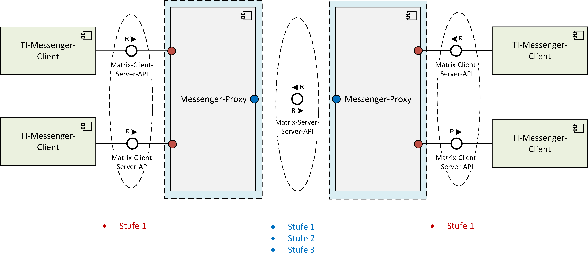
Abbildung 4: Darstellung der Berechtigungsprüfung am Messenger-Proxy
Client-Server Proxy
In der Funktion als Client-Server Proxy prüft der Messenger-Proxy eingehende Invite-Events der TI-Messenger-Clients (in der Abbildung rot dargestellt). Hierbei MUSS der Messenger-Proxy prüfen, ob die in der Anfrage enthaltenen Matrix-Domains zur TI-Föderation gehören (siehe Kapitel - Stufe 1). Nach erfolgreicher Prüfung, wird das Invite-Event an den Matrix-Homeserver weitergeleitet. Der Matrix-Homeserver prüft daraufhin, ob die beteiligten Akteure auf dem selben Matrix-Homeserver registriert sind. Ist dies nicht der Fall, wird das Invite-Event an den zuständigen Messenger-Proxy des Einzuladenden weitergeleitet. In diesem Fall findet die weitere Prüfung beim Messenger-Proxy des Einzuladenden statt (Server-Server Proxy).
Server-Server Proxy
In der Funktion als Server-Server Proxy prüft der Messenger-Proxy eingehende Invite-Events anderer Messenger-Proxies. Hierbei MÜSSEN alle Stufen gemäß Kapitel vom Messenger-Proxy geprüft werden (in der Abbildung blau dargestellt). Ist keine der drei Stufen erfolgreich geprüft worden, dann MUSS der Messenger-Proxy die Verbindung ablehnen.
Weiterführende Vorgaben
Der Messenger-Proxy MUSS eine Freigabeliste bereitstellen. Diese dient zur Prüfung von Berechtigungen bei der Kontaktaufnahme von anderen Akteuren (siehe Kapitel 3.5 - Berechtigungskonzept - Stufe 2). Ebenfalls MUSS der Messenger-Proxy eine Schnittstelle bereitstellen, mit der TI-Messenger-Clients Berechtigungen in der Freigabeliste hinterlegen können.
Der Messenger-Proxy MUSS nach dem Erhalt einer neuen Föderationsliste vom Registrierungs-Dienst die Signatur der erhaltenen Datei prüfen und diese nur nach erfolgreicher Prüfung verwenden.
Die Komponente Messenger-Proxy MUSS für jeden Messenger-Service separat bereitgestellt werden. Es ist nicht zwingend notwendig, diese auf die Matrix-Server-Server-API und Matrix-Client-Server-API bezogenen Prüfungen durch getrennte Komponenten zu realisieren. Die Art der Umsetzung bleibt dem TI-Messenger-Fachdienst-Hersteller überlassen.
Bei einer Nutzung des Messenger-Services für eine Organisation dient der Messenger-Proxy zusätzlich als Schnittstelle für den Anschluss des Authentifizierungs-Dienstes der Organisation an den Ziel Matrix-Homeserver.
Für den Betrieb des TI-Messenger-Dienstes MUSS der TI-Messenger-Anbieter mindestens einen Matrix-Homeserver gemäß der Matrix-Foundation Spezifikation in der sektorübergreifenden TI-Föderation betreiben. Es MÜSSEN alle Matrix-Homeserver die in der Föderation verwendet werden den Anforderungen der Matrix Foundation Spezifikation entsprechen. Über den Matrix-Homeserver findet die Ad-hoc-Kommunikation der Akteure sowie weitere Nutzerinteraktionen (z. B. Starten neuer Räume etc.) statt.
Ein TI-Messenger-Client ist eine mobile oder stationäre Anwendung. Diese basiert auf der von der Matrix-Foundation definierten Spezifikation und ermöglicht die Ad-hoc-Kommunikation von Akteuren über den TI-Messenger-Dienst. Im Kontext des TI-Messenger-Dienstes wird zwischen zwei Ausprägungen des TI-Messenger-Clients unterschieden. Diese ergeben sich aus den jeweiligen Rollen der Akteure, die im Folgenden weiter beschrieben werden.
Für die Realisierung von Anwendungsfällen, die ausschließlich ein Administrator der Organisation ausführt (siehe Kapitel , dem Akteur "Org-Admin" zugeordneten Anwendungsfälle), MUSS ein TI-Messenger-Anbieter einen TI-Messenger-Client mit Administrationsfunktionen anbieten (auch als Org-Admin-Client bezeichnet). Diese erweiterte Funktionalität KANN auch in den TI-Messenger-Client für Akteure integriert sein. TI-Messenger-Clients für Akteure (Akteure in der Rolle User / User-HBA) unterstützen die von der Matrix-Spezifikation festgelegten Funktionalitäten sowie die Abfragen im VZD-FHIR-Directory. Der geforderte mindestens bereitzustellende Funktionsumfang wird in der [gemSpec_TI-Messenger-Client] beschrieben.
Der TI-Messenger-Dienst baut auf flächendeckender Verwendung von Transportverschlüsselung mittels TLS (gemäß den Vorgaben aus [gemSpec_Krypt]), zusätzlicher moderner Ende-zu-Ende-Verschlüsselung von Chatinhalten mittels OLM/MEGOLM und einer dezentralen Gesprächsarchitektur mittels föderierten Matrix-Homeservern auf.
Die Vorgaben für die Absicherung des TI-Messengers bestehen aus komponentenbezogenen Anforderungen, die in den jeweiligen Dokumenten in eigenen Kapiteln untergebracht sind, funktionsbezogenen Anforderungen, die im Rahmen der jeweiligen Funktionsbeschreibungen zu finden sind und ergänzenden übergreifenden Anforderungen, die aus anderen Spezifikationen stammen und den Steckbriefen zugeordnet werden.
Matrix
Für den TI-Messenger-Dienst wird das offene Kommunikationsprotokoll der Matrix-Foundation verwendet. Im Rahmen der Spezifikation wird das Server-Server- (gemäß [Server-Server API]) und das Client-Server-Protokoll (gemäß [Client-Server API]) nachgenutzt. Für die Kommunikation der Matrix-Homeserver in der Föderation wird die API gemäß [Server-Server API] verwendet. Der TI-Messenger-Client setzt bei der Kommunikation mit den Matrix-Homeservern die API des Matrix-Client-Server-Protokolls um. Für die Benachrichtigung der Akteure über eingehende Nachrichten wird ein Push-Gateway verwendet, welches gemäß [Push Gateway API] nachgenutzt wird. Bei der Kommunikation werden REST-Webservices über HTTPS (JSON-Objekte) aufgerufen.
OpenID-Connect
Das VZD-FHIR-Directory, der Registrierungs-Dienst sowie die TI-Messenger-Clients nutzen im Rahmen der Authentifizierung ID_TOKEN in Form eines JSON-Web-Token (JWT) gemäß [OpenID].
FHIR
Die TI-Messenger-Clients nutzen die FHIR-Schnittstellen der Teilkomponente FHIR-Proxy des VZD-FHIR-Directorys gemäß dem FHIR-Standard [FHIR] mit einer RESTful API.
Für die Authentifizierung von Akteuren werden die durch den jeweiligen Matrix-Homeserver bereitgestellten Authentifizierungsverfahren genutzt. Dies ermöglicht es z. B. Krankenhäusern ihre eigene Benutzerverwaltung (z. B. Active Directory) zu nutzen, oder Verbänden ihre eigenen Identitätsserver (IDP-Dienst) zu verwenden. Die Abstimmung, welches Authentifizierungsverfahren verwendet wird, trifft die Organisation mit dem jeweiligen TI-Messenger-Anbieter. Die Benutzerverwaltung erfolgt durch autorisierte Mitarbeiter in der jeweiligen Organisation (Akteur in der Rolle "Org-Admin"). Die Administration der verwendeten Authentifizierungsmethoden MÜSSEN unter der Kontrolle der jeweiligen Organisation sein.
Die Authentifizierung für den Lese- und Schreibzugriff auf das FHIR-Directory erfolgt mit Hilfe von Identitätstoken. Die jeweilige Überprüfung der Identitätstoken erfolgt am FHIR-Proxy des VZD-FHIR-Directory. Die Authentifizierung der Komponenten Registrierungs-Dienst und TI-Messenger-Client wird im Folgenden weiter beschrieben.
Registrierungs-Dienst
Die Authentifizierung des Registrierungs-Dienstes am VZD-FHIR-Directory erfolgt mittels OAuth am OAuth-Service des VZD-FHIR-Directory. Nach erfolgreicher Authentifizierung mit vereinbarten Client-Credentials wird dem Registrierungs-Dienst ein provider-accesstoken ausgestellt.
TI-Messenger-Client
TI-Messenger-Clients MÜSSEN sich gegenüber dem Auth-Service des VZD-FHIR-Directory mit Hilfe eines ID_TOKENS oder des Matrix-OpenID-Token authentifizieren. Dem Matrix-OpenID-Token des Matrix-Homeservers wird vertraut, wenn der ausstellende Matrix-Homeserver als Matrix-Domain einer verifizierten Organisations-Ressource im VZD-FHIR-Directory eingetragen wurde. Der Auth-Service des VZD-FHIR-Directory stellt nach erfolgreicher Prüfung des jeweiligen Matrix-OpenID-Token ein search-accesstoken aus. Dem ID_TOKEN wird vertraut, wenn der ausstellende IDP-Dienst beim VZD-FHIR-Directory registriert ist und somit das Token durch den Auth-Service validiert werden kann. Nach erfolgreicher Prüfung des ID_TOKEN durch den Auth-Service des VZD-FHIR-Directory wird ein owner-accesstoken ausgestellt.
Durch die Übergabe eines Matrix-ACCESS_TOKENS erhalten TI-Messenger-Clients Zugriff auf den Messenger-Service einer, in der Föderation registrierten, Organisation. Dieses wird durch den Matrix-Homeserver ausgestellt nachdem ein Akteur erfolgreich authentifiziert wurde. Das Matrix-ACCESS_TOKEN MUSS sicher auf dem Endgerät gespeichert werden.
Registrierungs-Dienst
Für den Schreibzugriff des Registrierungs-Dienstes autorisiert dieser sich gegenüber dem FHIR-Proxy des VZD-FHIR-Directory mit einem provider-accesstoken, welches vom OAuth-Service des VZD FHIR-Directory ausgestellt wurde.
TI-Messenger-Client
Für den Lesezugriff autorisieren sich TI-Messenger-Clients gegenüber dem FHIR-Proxy des VZD-FHIR-Directory mit einem search-accesstoken, welches vom Auth-Service des VZD FHIR-Directory ausgestellt wurde. Für den Schreibzugriff nutzen TI-Messenger-Clients das owner-accesstoken, welches vom Auth-Service des VZD FHIR-Directory ausgestellt wurde.
Im folgenden Kapitel wird beschrieben, wie der Lese- und Schreibzugriff durch die TI-Messenger-Clients und dem Registrierungs-Dienst auf dem VZD-FHIR-Directory erfolgt.
Registrierungs-Dienst
Die TI-Messenger-Fachdienste erhalten die Möglichkeit, mittels ihres Registrierungs-Dienstes die Föderationsliste vom FHIR-Proxy des VZD-FHIR-Directory abzurufen. Hierfür MUSS die Schnittstelle /tim-provider-services am FHIR-Proxy des VZD-FHIR-Directory unter Vorlage des provider-accesstoken aufgerufen werden.
TI-Messenger-Clients
Durch den Aufruf der Schnittstelle /search am FHIR-Proxy des VZD-FHIR-Directory KANN ein TI-Messenger-Client unter Vorlage des search-accesstoken Suchanfragen an das FHIR-Directory stellen. Die Suchergebnisse sind abhängig von den eingetragenen FHIR-Ressourcen und deren Sichtbarkeit.
Registrierungs-Dienst
Die TI-Messenger-Fachdienste erhalten die Möglichkeit, mittels ihres Registrierungs-Dienstes Messenger-Services in die TI-Föderation aufzunehmen. Hierfür MUSS die Schnittstelle /tim-provider-services am FHIR-Proxy des VZD-FHIR-Directory unter Vorlage des provider-accesstoken aufgerufen werden.
TI-Messenger-Clients
Durch den Aufruf der Schnittstelle /owner am FHIR-Proxy des VZD-FHIR-Directory erhält ein Akteur unter Vorlage des owner-accesstoken Schreibzugriffe auf das FHIR-Directory. In der folgenden Tabelle wird die zu verändernde FHIR-Ressource in Abhängigkeit zu der verwendeten Identität eines Akteurs beschrieben (siehe dazu auch die Tabelle "Verzeichnistypen - Rechtekonzept").
Tabelle 5: Schreibzugriff - VZD-FHIR-Ressourcen
| Rolle | Identität | FHIR-Ressource | Beschreibung |
|---|---|---|---|
| Org-Admin | SMC-B | HealthcareService |
Die Nutzung einer SMC-B ermöglicht es einem Akteur in der Rolle "Org-Admin" mit Hilfe eines TI-Messenger-Clients mit Administrationsfunktion FHIR-Ressourcen (Endpoint) im Namen der Organisation in das Organisationsverzeichnis einzutragen. Die Einträge im Organisationsverzeichnis beginnen immer mit einer HealthcareService Ressource. |
| User-HBA | HBA | PractitionerRole | Die Nutzung eines HBAs ermöglicht es einem Akteur in der Rolle "User-HBA" mit Hilfe eines TI-Messenger-Clients seine, bereits bestehende FHIR-Ressource (Endpoint), im Personenverzeichnis zu erweitern, um für andere Leistungserbringer anschreibbar zu werden oder um andere Leistungserbringer anzuschreiben. Die Einträge im Personenverzeichnis beginnen immer mit einer PractitionerRole Ressource. |
Aufgrund der Vielzahl an Teilnehmern wird eine komfortable Benutzerverwaltung innerhalb des TI-Messenger-Dienstes benötigt. In diesem Kapitel werden die für das User Management notwendigen Rollen und die dafür verwendeten Nutzer-Verzeichnisse beschrieben.
Voraussetzung für die Nutzung des TI-Messenger-Dienstes ist zunächst, dass sich ein Akteur über ein Authentifizierungsverfahren am Matrix-Homeserver seiner Organisation authentifizieren kann und ein Nutzer-Account auf dem Matrix-Homeserver angelegt wurde. Der Nutzer-Account auf dem Matrix-Homeserver wird entweder vom Akteur in der Rolle "Org-Admin" seiner Organisation bereitgestellt oder vom Akteur selbst am Matrix-Homeserver registriert. Bei der Erstellung des Nutzer-Accounts wird die MXID des Akteurs erzeugt sowie der Displayname des Akteurs festgelegt (siehe gemSpec_TI-Messenger-Client#Weitere Funktionen). Nach der Erstellung des Nutzer-Accounts am Matrix-Homeserver wird die MXID des Akteurs im User-Directory des Matrix-Homeservers hinterlegt. Alle im User-Directory des Matrix-Homeservers hinterlegten MXIDs sind anschließend durch andere Akteure seiner Organisation auffindbar und erreichbar. Soll der Akteur auch von außerhalb der Organisation auffindbar werden, so MUSS dieser mit seiner MXID in das Organisationsverzeichnis im VZD-FHIR-Directory hinterlegt werden. Das Hinterlegen der MXID eines Akteurs in das Organisationsverzeichnis MUSS durch den Akteur in der Rolle "Org-Admin" erfolgen. Voraussetzung ist das vorhandensein einer HealthcareService-Ressource der Organisation. Die MXIDs werden in, der HealthcareService-Ressource zugeordnet, Endpoint-Ressourcen hinterlegt. Die Einrichtung einer HealthcareService-Ressource einer Organisation erfolgt durch den Akteur in der Rolle "Org-Admin". Möchte ein Akteur ohne Zugehörigkeit zu einer Organisation gefunden werden, so MUSS seine MXID in das Personenverzeichnis des VZD-FHIR-Directory hinterlegt werden. Voraussetzung hierfür ist der Besitz eines HBAs.
Die folgende Tabelle zeigt einen zusammenfassenden Überblick der Benutzerverwaltung.
Tabelle 6: Überblick der Benutzerverwaltung in Abhängigkeit der Rolle
| Rolle | Client | Administration | Wo |
|---|---|---|---|
| Org-Admin | TI-Messenger Client mit Administrationsfunktionen (Org-Admin-Client) |
|
Matrix-Homeserver (User Directory) |
|
VZD-FHIR-Directory (Organisationsverzeichnis) |
||
| User | TI-Messenger Client |
|
Matrix-Homeserver (User Directory) |
| User-HBA | TI-Messenger Client |
|
VZD-FHIR-Directory (Personenverzeichnis) |
Einrichtungen im Gesundheitswesen sind sehr unterschiedlich strukturiert und wollen hinsichtlich ihrer Erreichbarkeit flexibel eigene Strukturen abbilden können. Daher sind beim TI-Messenger-Dienst Accounts notwendig, die es ermöglichen, Akteure unterhalb der Struktur erreichbar zu machen. Der anfragende Akteur muss dann nicht die genaue interne Struktur der Organisation kennen. Diese speziellen Accounts werden im folgenden als Funktionsaccounts bezeichnet.
Ein Funktionsaccount ist als eine Endpoint-Ressource (mit dem payloadType "TI-Messenger chat") eines HealthcareService einer Organisation anzulegen. Der HealthcareService bildet im FHIR-Directory eine Struktur (z. B. Station in einem Krankenhaus) der Organisation ab. Zur Erreichbarkeit dieser Struktur wird die MXID eines Chatbots oder eines Akteurs (der stellvertretend für die Organisation eintritt) in das address Attribut der Endpoint Ressource hinterlegt. Pro HealthcareService darf nur eine Endpoint-Ressource für den payloadType "TI-Messenger chat" existieren. Somit kann die angelegte Struktur der Organisation über den Funktionsaccount und dessen hinterlegten Namen (Endpoint.name) im VZD-FHIR-Directory von einem Akteur gefunden werden.
Chatbot
Chatbots sind spezielle Akteure (siehe Kapitel "Akteure und Rollen"), die stellvertretend für eine Struktur einer Organisation von einem die Kommunikation initiierenden Akteur eingeladen werden können. Chatbots KÖNNEN die Kommunikation vollständig automatisiert abschließen (z. B. Terminvergabe) oder in der Organisation hinterlegte natürliche Personen dem Chat hinzuziehen (z. B. Ausstellen eines Rezeptes). Beispiele für Chatbots sind unter [Matrix Bots] zu finden. Treten Chatbots als Kommunikationsteilnehmer des TI-Messengers auf, so MÜSSEN diese im jeweiligen Chat als Chatbot gekennzeichnet werden.
Im Folgenden wird ein Beispiel für eine mögliche Zuordnung für die Abbildung von Funktionsaccounts mit Hilfe von Chatbots und eines Akteurs der stellvertretend für die Organisation auftritt.
Der Chatbot KANN automatisiert Anfragen von Akteuren (z. B. für Terminanfragen, Medikationsentscheidung) bearbeiten oder bei Bedarf die zugeordneten und zu diesem Zeitpunkt verfügbaren Akteure in den Chatraum einladen. Die dem Chatbot zur Verfügung stehenden Akteure (in der Spalte Akteur blau hinterlegt) sind in der Konfiguration des Chatbots zu definieren. Im abschließenden Beispiel ist ein Akteur (natürliche Person) als Endpoint hinterlegt und tritt stellvertretend für die Organisation in den Chat ein.
Tabelle 7: Beispiel für Funktionsaccounts
| Abteilung | Funktionsaccount | Endpoint.address | Akteur (MXID) |
Displayname |
|---|---|---|---|---|
| Kardiologie | Labor_Kardiologie | @MXID_Bot01:<domain>.de | @MXID_01:<domain>.de @MXID_02:<domain>.de |
Empfang_Kardiologie (Chatbot) Dennert, Maltilde Fritsche, Sarah |
| Neurologie | Ambulanz_Neurologie | @MXID_Bot02:<domain>.de | @MXID_03:<domain>.de | Ambulanz_Neurologie (Chatbot) Gotsch, Gerd |
| Radiologie | Empfang_Radiologie | @MXID_04:<domain>.de | - | Fruechtl, Wilfried |
Im Folgenden wird die Interaktion eines externen Akteurs mit einem Funktionsaccount gezeigt.
Prozess:
1. Vorbedingung:
|
2. Konfiguration von Funktionsaccounts:
|
3. Beispielhafter Ablauf (siehe Abbildung "Interaktion mit einem Chatbot"):
|
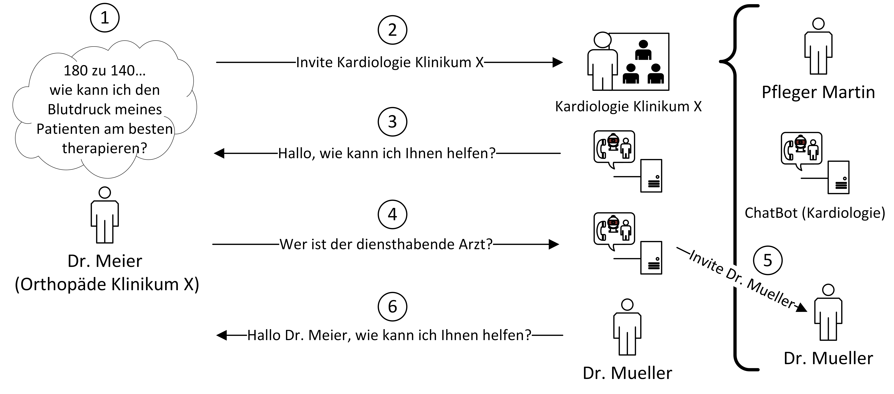
Abbildung 5: Beispiel einer Interaktion mit einem Chatbot
Der TI-Messenger-Anbieter MUSS eine Referenz-Instanz und mindestens eine Test-Instanz des TI-Messenger-Fachdienstes und TI-Messenger-Clients bereitstellen und betreiben. Die Referenz-Instanz hat die gleiche Version wie die Produktionsumgebung und kann von anderen Herstellern für Tests und Entwicklung gegen die zugelassene Version benutzt werden. Weiterhin wird die Referenz-Instanz für die Reproduktion aktueller Fehler/Probleme aus der Produktionsumgebung genutzt. Der Zugriff auf die Referenz-Instanz MUSS für die gematik zur Fehleranalyse gewährleistet sein.
Die Test-Instanz dient den Herstellern bei der Entwicklung neuer TI-Messenger-Clients und TI-Messenger Fachdienste Versionen, den IOP-Tests zwischen den verschiedenen TI-Messenger-Anbietern und wird auch von der gematik für die Zulassung genutzt.
Der TI-Messenger-Anbieter MUSS die verschiedenen Benutzer der Referenz-Instanz und der Test-Instanz koordinieren (Verwaltung eines Test-/Nutzungsplans). Bei Bedarf (Entwicklung verschiedener Versionen, hoher Auslastung durch andere Hersteller oder durch die gematik) MUSS der TI-Messenger-Anbieter auch mehrere Test-Instanzen mit der gleichen oder mit verschiedene Versionen bereitstellen und betreiben.
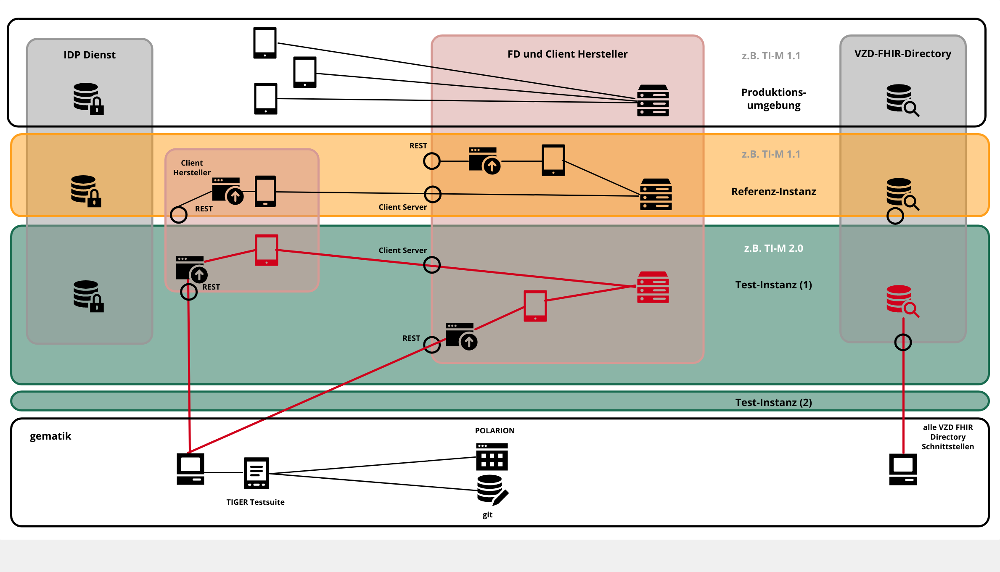
Abbildung 6: TI-Messenger-Dienst Instanzen
Der TI-Messenger-Anbieter verantwortet im Betrieb folgende Produkte:
Der TI-Messenger-Anbieter MUSS mindestens einen TI-Messenger-Fachdienst, mindestens einen TI-Messenger-Client für Akteure und mindestens einen Org-Admin-Client (die Clients jeweils oder in einen TI-Messenger-Client integriert) anbieten.
Der TI-Messenger-Anbieter KANN auch mehrere TI-Messenger-Clients und mehrere TI-Messenger-Fachdienste anbieten. Der tatsächliche Betrieb kann gemäß [gemKPT_Betr#Anbieterkonstellationen] ausgelagert werden.
Der TI-Messenger-Anbieter MUSS seinen Nutzern und Organisationen einen Helpdesk entsprechend [gemKPT_Betr] anbieten, welcher auch Störungen zu allen verantworteten TI-Messenger-Clients und TI-Messenger-Fachdiensten entgegennimmt.
Der TI-Messenger-Anbieter ist gemäß Betriebskonzept [gemKPT_Betr] ein Teilnehmer im TI-ITSM (IT-Service-Management der TI) mit allen damit verbundenen Rechten und Pflichten.
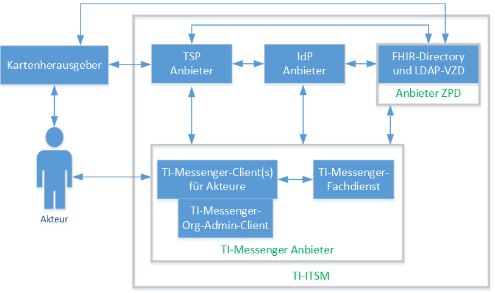
Abbildung 7: Ausschnitt - TI-Messenger-Anbieter im TI-ITSM
Hinweis: Die Abbildung bildet die organisatorischen Kommunikationsbeziehungen im Vordergrund des TI-ITSM-System zwischen den jeweiligen Entitäten ab. Die Produkte beim TI-Messenger Anbieter können einzeln zugelassen werden, werden aber im Bundle im Sinne des Nutzers mit einem SPOC für die jeweiligen Komponenten vom jeweiligen Anbieter angeboten.
Die nachfolgend beschriebenen Anwendungsfälle sind spezifisch für den TI-Messenger-Dienst und weichen daher teilweise von der Matrix-Client-Server-API ab. Das gleiche gilt für die auf dem Matrix-Server-Server-Protokoll ([Server-Server API]) basierenden Anwendungsfälle. Das bedeutet, dass alle Anwendungsfälle, die gemäß Matrix-Client-Server-Protokoll umgesetzt werden, an dieser Stelle nicht weiter aufgeführt sind. Stattdessen wird hier auf die Matrix-Client-Server-API verwiesen ([Client-Server API]).
Im Kontext des TI-Messenger-Dienstes nehmen Akteure unterschiedliche Rollen ein (siehe Kapitel ). Entsprechend der eingenommen Rolle eines Akteurs werden unterschiedliche Anwendungsfälle ausgelöst. Für die Rollen "Org-Admin und User/User-HBA" wird dies in den folgenden Abbildungen dargestellt.
Rolle: Org-Admin
Ein Akteur in der Rolle "Org-Admin" KANN ein Leistungserbringer / beauftragter Mitarbeiter in einer Organisation oder ein beauftragter Administrator des TI-Messenger-Anbieters sein. Für seine administrativen Tätigkeiten löst dieser Akteur, unter Nutzung einer freigeschalteten SMC-B, im Kontext des TI-Messenger-Dienstes die folgenden Anwendungsfälle aus.
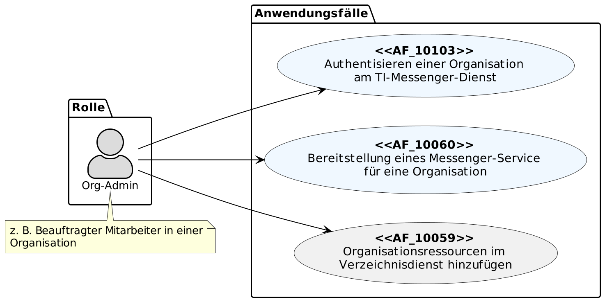
Abbildung 8: Org-Admin - Übersicht Anwendungsfälle
Der Anwendungsfall "AF_10060 - Bereitstellung eines Messenger Service für eine Organisation" setzt die erfolgreiche Authentifizierung der Organisation durch den Anwendungsfall "AF_10103 - Authentisieren einer Organisation am TI-Messenger-Dienst" voraus. Werden durch eine Organisation mehrere Messenger-Services benötigt (z. B. im Krankenhausumfeld) KANN der Anwendungsfall mehrfach ausgeführt werden. Mit der farblichen Zuordnung soll auf eine funktionale Beziehung zwischen den einzelnen Anwendungsfällen hingewiesen werden.
Eine weitere Aufgabe des Akteurs in der Rolle "Org-Admin", welche hier nicht weiter in einem Anwendungsfall gezeigt wird, ist die Einrichtung von Funktionsaccounts und die Benutzerverwaltung.
Rolle: User / User-HBA
Ein Akteur in der Rolle "User / User-HBA" KANN die folgenden Anwendungsfälle auslösen.
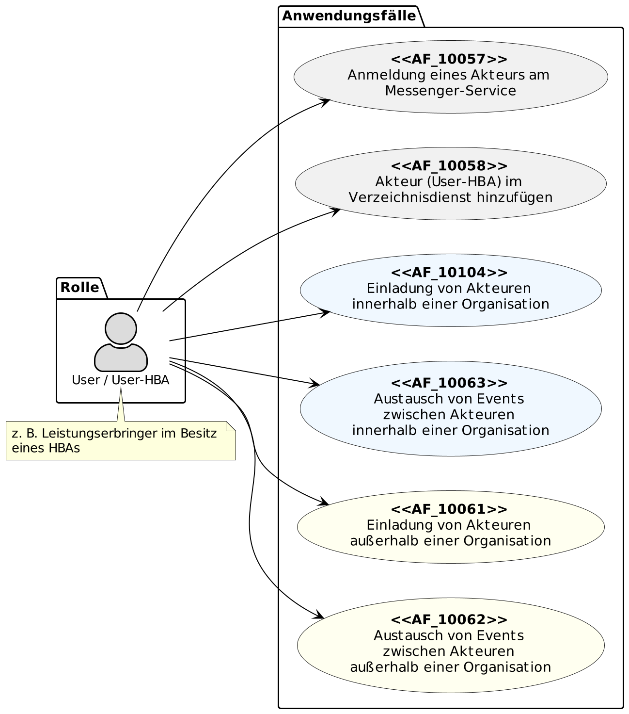
Abbildung 9: User / User HBA - Übersicht Anwendungsfälle
Der Anwendungsfall "AF_10058 - Akteur (User-HBA) im Verzeichnisdienst hinzufügen" KANN nur von einen Akteur in der Rolle "User-HBA" ausgeführt werden. Alle anderen gezeigten Anwendungsfälle KÖNNEN von den Akteuren in der Rolle "User / User-HBA" ausgeführt werden. Mit der farblichen Zuordnung soll auf eine funktionale Beziehung zwischen den einzelnen Anwendungsfällen hingewiesen werden.
Hinweis: In den folgenden Anwendungsfällen wird auf Abläufe verwiesen, die im Anhang B zu finden sind. Ebenfalls können für eine bessere Lesbarkeit die in den jeweiligen Anwendungsfällen dargestellten Laufzeitsichten als PlantUML-Quelle in [api-messenger] unter src/plantuml und in Diagrammform unter /images/diagrams abgerufen werden.
AF_10103
Mit diesem Anwendungsfall authentisiert ein Akteur, in der Rolle "Org-Admin", seine Organisation bei einem TI-Messenger-Anbieter. Für die Authentisierung einer Organisation stellt der TI-Messenger-Fachdienst eine Schnittstelle an seinem Registrierungs-Dienst bereit. Diese wird über das Frontend des Registrierungs-Dienstes für die Authentisierung verwendet. Die Authentisierung der Organisation erfolgt individuell und nutzungsabhängig durch einen Akteur in der Rolle "Org-Admin". Für die Verifizierung der Organisation MUSS bei der Authentisierung am IDP-Dienst eine freigeschaltete SMC-B verwendet werden. Als Nachweis zur Prüfung auf eine gültige Organisation MUSS der Registrierungs-Dienst die im ID_TOKEN enthaltene ProfessionOID gegen die OID-Festlegung für Institutionen prüfen. Bei erfolgreicher Verifizierung der Organisation wird ein Administrator-Account für die Organisation am Registrierungs-Dienst angelegt. Dies ermöglicht es einem Administrator Messenger-Services zu registrieren und seiner Organisation am TI-Messenger-Dienst teilzunehmen.
Tabelle 8: Tabelle : AF - Authentisieren einer Organisation am TI-Messenger-Dienst
| AF_10103 | Authentisieren einer Organisation am TI-Messenger-Dienst |
|---|---|
| Akteur | Beauftragter Mitarbeiter einer Organisation in der Rolle "Org-Admin" |
| Auslöser |
Eine Organisation des deutschen Gesundheitswesens möchte am TI-Messenger-Dienst teilnehmen und benötigt die Berechtigung einen Messenger-Service zu registrieren |
| Komponenten |
|
| Vorbedingung |
|
| Eingangsdaten | Identität der Organisation, SMC-B |
| Ergebnis | Die Organisation wurde am Registrierungs-Dienst des TI-Messenger-Fachdienstes verifiziert |
| Ausgangsdaten | ID_TOKEN, Admin-Account, Status |
| Akzeptanzkriterien | , , , , |
Abbildung 10: Laufzeitsicht - Authentisieren einer Organisation am TI-Messenger-Dienst
<=Akzeptanzkriterien für den Anwendungsfall: Authentisieren einer Organisation am TI-Messenger-Dienst (AF_10103)
ML-128757
Nur ein Akteur in der Rolle "Org-Admin" darf seine Organisation gegenüber dem TI-Messenger-Fachdienst authentifizieren.
<=
ML-128759
Die Organisation wurde beim TI-Messenger-Fachdienst erfolgreich mit einer Identität einer Organisation des Gesundheitswesens verifiziert
<=
ML-128758
Das vom IDP-Dienst ausgestellte ID_TOKEN ist gültig und liegt dem Frontend des Registrierungs-Dienstes vor.
<=
ML-129853
Ein Administrator Account für die Organisation wurde erfolgreich am Registrierungs-Dienst angelegt.
<=
ML-132446
Die Rohdaten wurden entsprechend der Rohdatendefinition gemäß [gemSpec_TI-Messenger-FD#Betrieb] für den TI-Messenger-Fachdienst erfolgreich erfasst und an die definierte Schnittstelle der Rohdatenerfassung versendet. <=
AF_10060
Mit diesem Anwendungsfall wird einer zuvor am Registrierungs-Dienst authentifizierten Organisation ein Messenger-Service für diese Organisation durch einen Akteur in der Rolle "Org-Admin" bereitgestellt. Die Beantragung zur Bereitstellung eines Messenger-Service wird durch den Akteur in der Rolle "Org-Admin" am Frontend des Registrierungs-Dienstes vorgenommen. Dieser MUSS sich zuvor mit dem Admin-Account der Organisation am Registrierungs-Dienst anmelden. Für eine zeitnahe Adaption des TI-Messenger-Dienstes MUSS eine schnelle Bereitstellung von Messenger-Services gewährleistet sein. TI-Messenger-Anbieter sind verpflichtet, Prozesse zu etablieren, damit Messenger-Services für Organisationen schnell und ggf. automatisiert bereitgestellt werden können. Nach erfolgreicher Bereitstellung eines Messenger-Service wird dieser in die Föderation des TI-Messenger-Dienstes aufgenommen. Werden mehrere Messenger-Services für eine Organisation benötigt KANN dieser Anwendungsfall mehrfach ausgeführt werden.
Tabelle 9: AF - Bereitstellung eines Messenger-Service für eine Organisation
| AF_10060 | Bereitstellung eines Messenger-Service für eine Organisation |
|---|---|
| Akteur | Beauftragter Mitarbeiter einer Organisation in der Rolle "Org-Admin" |
| Auslöser | Eine Organisation des deutschen Gesundheitswesen möchte am TI-Messenger-Dienst teilnehmen und benötigt die Bereitstellung eines oder mehrerer Messenger-Services |
| Komponenten |
|
| Vorbedingung |
|
| Eingangsdaten | Admin-Account, Identität der Organisation (SMC-B) |
| Ergebnis |
|
| Ausgangsdaten | Neuer Messenger-Service für die Organisation, Status |
| Akzeptanzkriterien | , , , |
Abbildung 11: Laufzeitsicht - Bereitstellung eines Messenger-Service für eine Organisation
<=
Akzeptanzkriterien für den Anwendungsfall: Bereitstellung eines Messenger-Service für eine Organisation (AF_10060)
ML-123648
Nur ein Akteur in der Rolle "Org-Admin" darf einen Messenger-Service bereitstellen.
<=
ML-123649
Ein neuer Messenger-Service wurde mit dem gewählten Domainbezeichner erzeugt.
<=
ML-123650
Für den erzeugten Messenger-Service wurde ein neuer Eintrag im VZD-FHIR-Directory angelegt
<=
ML-132585
Die Rohdaten wurden entsprechend der Rohdatendefinition gemäß [gemSpec_TI-Messenger-FD#Betrieb] für den TI-Messenger-Fachdienst erfolgreich erfasst und an die definierte Schnittstelle der Rohdatenerfassung versendet. <=
AF_10059
Mit diesem Anwendungsfall macht ein Akteur in der Rolle "Org-Admin" Akteure seiner Organisation im TI-Messenger-Dienst für andere Akteure auffindbar und erreichbar. Dafür werden FHIR-Ressourcen mit ihrer jeweiligen MXID im Organisationsverzeichnis (HealthcareService) des VZD-FHIR-Directory hinterlegt. Organisationen KÖNNEN mehrere FHIR-Ressourcen pro Organisation administrieren und somit eingehende Kommunikationsprozesse organisatorisch und thematisch strukturieren.
Tabelle 10: AF - Organisationsressourcen im Verzeichnisdienst hinzufügen
| AF_10059 | Organisationsressourcen im Verzeichnisdienst hinzufügen |
|---|---|
| Akteur | Beauftragter Mitarbeiter einer Organisation in der Rolle "Org-Admin" |
| Auslöser | Der Administrator der Organisation (Org-Admin) möchte seine Organisation erreichbar machen indem die MXIDs der Akteure der Organisation im VZD-FHIR-Directory hinterlegt werden. |
| Komponenten |
|
| Vorbedingungen |
|
| Eingangsdaten | SMC-B, FHIR-Organisations-Ressourcen |
| Ergebnis | FHIR-Organisations-Ressourcen aktualisiert, Status |
| Ausgangsdaten | Aktualisierte VZD-FHIR-Directory-Datensätze |
| Akzeptanzkriterien | , , |
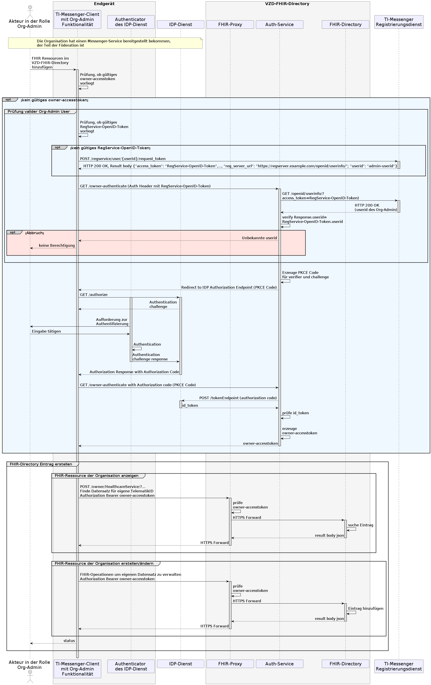
Abbildung 12: Laufzeitsicht - Organisationsressourcen im Verzeichnisdienst hinzufügen
<=
Akzeptanzkriterien für den Anwendungsfall: Organisationsressourcen im Verzeichnisdienst hinzufügen (AF_10059)
ML-123627
Nach erfolgreicher Authentisierung an einem zuständigen IDP-Dienst als Administrator einer Organisation kann der Akteur in der Rolle "Org-Admin" die MXID eines Akteurs seiner Organisation in den HealthcareService in einen Endpoint eintragen und Unterstrukturen für die Organisation anlegen. Der Akteur in der Rolle "Org-Admin" wird über den Erfolg der Operation informiert.
<=
ML-123626
Der Akteur in der "Rolle Org-Admin" darf nur FHIR-Ressourcen seiner eigenen Organisation (inklusive der Unterstrukturen) ändern. Ein Zugriff auf FHIR-Ressourcen, die nicht zu der eigenen Organisation gehören, MUSS unterbunden werden.
<=
ML-132586
Die Rohdaten wurden entsprechend der Rohdatendefinition gemäß [gemSpec_TI-Messenger-FD#Betrieb] für den TI-Messenger-Fachdienst erfolgreich erfasst und an die definierte Schnittstelle der Rohdatenerfassung versendet. <=
AF_10057
Mit diesem Anwendungsfall meldet sich ein Akteur an einem in der TI-Föderation zuständigen Messenger-Service an und registriert seinen TI-Messenger-Client als Endgerät. Der Akteur MUSS die Matrix-Domain des gewünschten Messenger-Service direkt im TI-Messenger-Client eingeben können. Die Eingabe KANN dabei automatisiert oder durch andere Hilfsmittel wie beispielweise durch ein QR-Code-Scan unterstützt werden. Die Authentifizierung erfolgt hierbei nach den Vorgaben der jeweiligen Organisation. Nach der erfolgreichen Anmeldung eines Akteurs am Messenger-Service KÖNNEN die von ihm angebotenen Dienste verwendet werden.
Tabelle 11: AF - Anmeldung eines Akteurs am Messenger-Service
| AF_10057 | Anmeldung eines Akteurs am Messenger-Service |
|---|---|
| Akteur | Leistungserbringer, Mitarbeiter einer Organisation im Gesundheitswesen in der "Rolle User / User-HBA" |
| Auslöser | Ein Akteur möchte sich mit seinem TI-Messenger-Client bei einem Messenger-Service anmelden. |
| Komponenten |
|
| Vorbedingungen |
|
| Eingangsdaten | URL des Matrix-Homeservers |
| Ergebnis | Es wurde ein TI-Messenger Account für einen Akteur in der Rolle "User / User-HBA" erzeugt. |
| Ausgangsdaten | Matrix-ACCESS_TOKEN, MXID, device_id, Matrix-OpenID-Token, Status |
| Akzeptanzkriterien | , , , , |
Abbildung 13: Laufzeitsicht - Anmeldung eines Akteurs am Messenger-Service
<=Akzeptanzkriterien für den Anwendungsfall: Anmeldung eines Akteurs am Messenger-Service (AF_10057)
ML-123571
Ein Akteur hat sich erfolgreich an einem gültigen Messenger-Service angemeldet und mit einem zugelassenen Authentifizierungsverfahren erfolgreich authentisiert. Es MUSS sichergestellt werden, dass die Anmeldung an Messenger-Services, die nicht Teil der Föderation sind, nicht möglich ist.
<=
ML-123576
Nach erfolgreicher Anmeldung hat der Messenger-Service dem TI-Messenger-Client ein Matrix-ACCESS_TOKEN ausgestellt.
<=
ML-123575
Der TI-Messenger-Client speichert das ihm übergebene Matrix-ACCESS_TOKEN zur Verwendung in den folgenden Anwendungsfällen.
<=
ML-129870
Ein Akteur kann sich nicht bei einem öffentlichen Matrix-Homeserver anmelden, der nicht in die TI-Föderation integriert ist.
<=
ML-132587
Die Rohdaten wurden entsprechend der Rohdatendefinition gemäß [gemSpec_TI-Messenger-FD#Betrieb] für den TI-Messenger-Fachdienst erfolgreich erfasst und an die definierte Schnittstelle der Rohdatenerfassung versendet. <=
AF_10058
Mit diesem Anwendungsfall wird ein Akteur in der Rolle "User-HBA" für andere Akteure anderer Messenger-Services auffindbar und erreichbar. Dafür werden FHIR-Ressourcen mit ihrer jeweiligen MXID im Personenverzeichnis (PractitionerRole) des VZD-FHIR-Directory hinterlegt. Zusätzlich besteht die Möglichkeit die Sichtbarkeit für andere Akteure einzuschränken. Dieser Anwendungsfall KANN direkt mit dem initialen Anmeldevorgang eines Akteurs am Messenger Service (siehe Anwendungsfall: "AF_10057 - Anmeldung eines Akteurs am Messenger-Service") kombiniert werden. Hierfür wird der Akteur in der Rolle "User-HBA" während des Anmeldevorgangs durch den TI-Messenger-Client gefragt, ob dieser im Besitz eines HBAs ist.
Tabelle 12: AF - Akteur (User-HBA) im Verzeichnisdienst hinzufügen
| AF_10058 | Akteur (User-HBA) im Verzeichnisdienst hinzufügen |
|---|---|
| Akteur | Leistungserbringer, Mitarbeiter einer Organisation im Gesundheitswesen in der Rolle "User-HBA" |
| Auslöser | Ein Akteur in der Rolle "User-HBA" möchte sich im Personenverzeichnis erreichbar machen, indem er seine MXID im seinen Practitioner-Datensatz im VZD-FHIR-Directory hinterlegt. |
| Komponenten |
|
| Vorbedingungen |
|
| Eingangsdaten | HBA, FHIR-Practitioner-Ressourcen |
| Ergebnis | FHIR-Practitioner-Ressourcen aktualisiert, Status |
| Ausgangsdaten | aktualisierter Practitioner-Datensatz |
| Akzeptanzkriterien | , , |
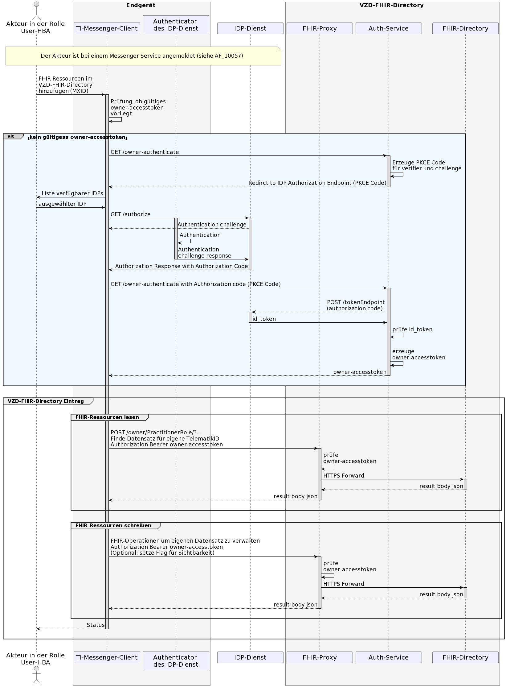
Abbildung 14: Laufzeitsicht - Akteur (User-HBA) im Verzeichnisdienst hinzufügen
<=Akzeptanzkriterien für den Anwendungsfall: Akteur (User-HBA) im Verzeichnisdienst hinzufügen (AF_10058)
ML-123612
Die MXID wurde in den Practitioner-FHIR-Datensatz eingefügt und der Akteur über den Erfolg informiert.
<=
ML-123611
Der Akteur in der Rolle "User-HBA" darf nur die eigene FHIR-Ressourcen ändern.
<=
ML-132588
Die Rohdaten wurden entsprechend der Rohdatendefinition gemäß [gemSpec_TI-Messenger-FD#Betrieb] für den TI-Messenger-Fachdienst erfolgreich erfasst und an die definierte Schnittstelle der Rohdatenerfassung versendet. <=
AF_10064
Dieser Anwendungsfall prüft, ob ein Messenger-Service zugehörig zur TI-Messenger-Föderation ist und gilt für alle Anwendungsfälle, welche die Matrix-Domain eines anderen Messenger-Services überprüfen müssen. Für die Prüfung der Zugehörigkeit der Matrix-Domain zur TI-Messenger-Föderation, verwendet der Messenger-Proxy eine Föderationsliste die vom Registrierungs-Dienst seines TI-Messenger-Fachdienstes bereitgestellt wird. Die Speicherdauer der Föderationsliste des Messenger-Proxies ist limitiert. Die Aktualisierung der Föderationsliste erfolgt wie in Anhang B 8.2 "Aktualisierung der Föderationsliste" beschrieben.
Tabelle 13: Föderationszugehörigkeit eines Messenger-Service prüfen
| AF_10064 | Föderationszugehörigkeit eines Messenger-Service prüfen |
|---|---|
| Akteur | - |
| Auslöser | Der Messenger-Proxy empfängt einen Invite-Event und MUSS die im Request enthaltenen MXIDs auf Domain-Zugehörigkeit zur TI-Messenger-Föderation prüfen. |
| Komponenten |
|
| Vorbedingungen | keine |
| Eingangsdaten | Invite-Event |
| Ergebnis | Der Messenger-Proxy ermittelt mittels der Föderationsliste, ob die Matrix-Domain des anderen Messenger-Service Teil der TI-Messenger-Föderation ist. |
| Ausgangsdaten | Status vom Matrix-Homeserver und Weiterleitung |
| Akzeptanzkriterien | , , , |
Abbildung 15: Laufzeitsicht - Föderationszugehörigkeit eines Messenger-Service prüfen
<=
Akzeptanzkriterien für den Anwendungsfall: Föderationszugehörigkeit eines Messenger-Service prüfen (AF_10064)
ML-123672
Der Registrierungs-Dienst des TI-Messenger-Fachdienstes MUSS die Föderationsliste erfolgreich vom FHIR-Proxy des VZD-FHIR-Directory abrufen.
<=
ML-123893
Es MUSS sichergestellt werden, dass die Föderationsliste des Messenger-Proxy aktuell ist. Dafür MUSS der Messenger-Proxy mindestens einmal täglich eine aktuelle Liste bei dem Registrierungs-Dienst anfordern.
<=
ML-123891
Es MUSS sichergestellt werden, dass der Registrierungs-Dienst die Föderationsliste auf Aktualität überprüft, bevor eine aktualisierte Liste durch den Messenger-Proxy abgerufen werden kann. Ebenfalls MUSS sichergestellt werden, dass der Messenger-Proxy tatsächlich überprüft, ob die Matrix-Domain des anderen Messenger-Service Teil der Föderationsliste ist.
<=
ML-132589
Die Rohdaten wurden entsprechend der Rohdatendefinition gemäß [gemSpec_TI-Messenger-FD#Betrieb] für den TI-Messenger-Fachdienst erfolgreich erfasst und an die definierte Schnittstelle der Rohdatenerfassung versendet. <=
AF_10104
In diesem Anwendungsfall wird ein Akteur der zu einer gemeinsamen Organisation gehört in einen Raum eingeladen um Aktionen auszuführen. Für die Suche von Akteuren innerhalb einer gemeinsamen Organisation durchsucht ein TI-Messenger-Client das Nutzerverzeichnis seiner Organisation auf dem Matrix-Homeserver. In diesem Anwendungsfall prüft der Messenger-Proxy ob die im Invite-Event enthaltenen Matrix-Domains Teil der TI-Föderation sind (siehe Berechtigungskonzept - Stufe 1). Ist dies der Fall erfolgt die Weiterleitung an den zugehörigen Matrix-Homeserver. Dieser prüft ob die beteiligten Akteure bei ihm registriert sind. Ist dies nicht der Fall, handelt es sich bei dem einzuladenden Akteur nicht um einen Akteur innerhalb der Organisation und das Invite-Event wird an den Matrix- Homeserver des einzuladenden Akteurs weitergeleitet. Der Anwendungsfall "AF_10061 - Einladung von Akteuren außerhalb einer Organisation" zeigt den sich daraus ergebenden Verlauf.
Tabelle 14: Einladung von Akteuren innerhalb einer Organisation
| AF_10104 | Einladung von Akteuren innerhalb einer Organisation |
|---|---|
| Akteur | Leistungserbringer, Mitarbeiter einer Organisation im Gesundheitswesen in der Rolle "User / User-HBA" |
| Auslöser | Akteur A möchte Akteur B seiner Organisation in einen gemeinsamen Raum einladen. |
| Komponenten |
|
| Vorbedingungen |
|
| Eingangsdaten | Invite-Event |
| Ergebnis | Akteur A und Akteur B sind beide in einem gemeinsamen Chatraum. Optional erfolgt eine Benachrichtigung an Akteur B über die Einladung in den Chatraum. |
| Ausgangsdaten | Status |
| Akzeptanzkriterien | , , , |
Abbildung 16: Einladung von Akteuren innerhalb einer Organisation
<=
Akzeptanzkriterien für den Anwendungsfall: Einladung von Akteuren innerhalb einer Organisation (AF_10104)
ML-123896
Der TI-Messenger-Client zeigt eine Liste aller Akteuren eines Matrix-Homeservers an.
<=
ML-129415
Der Messenger-Proxy lehnt den Invite-Event ab, wenn die Matrix-Domain nicht zur TI-Föderation gehört.
<=
ML-129414
Alle Chat-Parteien sind erfolgreich im Chatraum vorhanden.
<=
ML-132590
Die Rohdaten wurden entsprechend der Rohdatendefinition gemäß [gemSpec_TI-Messenger-FD#Betrieb] für den TI-Messenger-Fachdienst erfolgreich erfasst und an die definierte Schnittstelle der Rohdatenerfassung versendet. <=
AF_10063
Dieser Anwendungsfall ermöglicht es Akteuren, welche sich in einem gemeinsamen Raum innerhalb eines Messenger-Service befinden, Nachrichten auszutauschen und weitere durch die Matrix-Spezifikation festgelegte Aktionen (Events) auszuführen.
Tabelle 15: Austausch von Events zwischen Akteuren innerhalb einer Organisation
| AF_10063 | Austausch von Events zwischen Akteuren innerhalb einer Organisation |
|---|---|
| Akteur | Leistungserbringer, Mitarbeiter einer Organisation im Gesundheitswesen in der Rolle "User / User-HBA" |
| Auslöser | Alle Matrix-Events die innerhalb eines Messenger-Service einer Organisation ausgeführt werden |
| Komponenten |
|
| Vorbedingungen |
|
| Eingangsdaten | Matrix-Event |
| Ergebnis | Matrix-Event wurde erfolgreich verarbeitet |
| Ausgangsdaten | Abhängig vom Matrix-Event |
| Akzeptanzkriterien | , , |
Abbildung 17: Laufzeitsicht - Austausch von Events zwischen Akteuren innerhalb einer Organisation
Akzeptanzkriterien für den Anwendungsfall: Austausch von Events zwischen Akteuren innerhalb einer Organisation (AF_10063)
ML-123670
Eine Chatnachricht vom TI-Messenger-Client A an TI-Messenger-Client B wurde vom Matrix-Homeserver erfolgreich verarbeitet.
<=
ML-123669
Der Matrix-Homeserver löst eine Benachrichtigung des TI-Messenger-Clients vom Empfänger über das mit dem TI-Messenger-Client verbundene Push-Gateway des TI-Messenger-Anbieters aus.
<=
ML-132591
Die Rohdaten wurden entsprechend der Rohdatendefinition gemäß [gemSpec_TI-Messenger-FD#Betrieb] für den TI-Messenger-Fachdienst erfolgreich erfasst und an die definierte Schnittstelle der Rohdatenerfassung versendet. <=
AF_10061
In diesem Anwendungsfall wird ein Akteur außerhalb einer Organisation eingeladen. Für die Suche von Akteuren außerhalb der Organisation KANN das VZD-FHIR-Directory verwendet werden. Ist die MXID des gesuchten Akteurs dort nicht vorhanden MUSS die Kontaktaufnahme auch über einen QR-Code Scan erfolgen. Im Gegensatz zu einer Einladung von Akteuren innerhalb einer Organisation (siehe "AF_10063 - Austausch von Events innerhalb einer Organisation"), prüft in diesem Anwendungsfall der Messenger-Proxy des Einzuladenden zusätzlich die im Kapitel "Berechtigungskonzept" festgelegten Kriterien (Stufe 1 - 3).
Tabelle 16 AF - Einladung von Akteuren außerhalb einer Organisation
| AF_10061 | Einladung von Akteuren außerhalb einer Organisation |
|---|---|
| Akteur | Leistungserbringer, Mitarbeiter einer Organisation im Gesundheitswesen in der "Rolle User / User-HBA" |
| Auslöser | Akteur A möchte mit Akteur B außerhalb einer Organisation einen gemeinsamen Chatraum einrichten. |
| Komponenten |
|
| Vorbedingungen |
|
| Eingangsdaten | Invite-Event |
| Ergebnis | Akteur A und Akteur B sind beide in einem gemeinsamen Chatraum. Optional erfolgt eine Benachrichtigung an Akteur B über die Einladung in den Chatraum. |
| Ausgangsdaten | Status |
| Akzeptanzkriterien | , , |
Abbildung 18: Laufzeitsicht - Einladung von Akteuren außerhalb einer Organisation
<=Akzeptanzkriterien für den Anwendungsfall: Einladung von Akteuren außerhalb einer Organisation (AF_10061)
ML-123654
Ein Messenger-Client kann erfolgreich im VZD-FHIR-Directory nach einem Chatpartner suchen.
<=
Ein Beispiel für einen Invite-Event ist im Dokument [gemSpec_TI-Messenger-FD#Messenger Proxy] zu finden.
ML-123663
Alle Chat Parteien sind erfolgreich im Chatraum vorhanden.
<=
ML-132864
Die Berechtigungsprüfung der Stufen 1-3 wurden berücksichtigt.
<=
ML-132592
Die Rohdaten wurden entsprechend der Rohdatendefinition gemäß [gemSpec_TI-Messenger-FD#Betrieb] für den TI-Messenger-Fachdienst erfolgreich erfasst und an die definierte Schnittstelle der Rohdatenerfassung versendet. <=
AF_10062
In diesem Anwendungsfall können Akteure welche sich in einem gemeinsamen Raum befinden Nachrichten austauschen und andere durch die Matrix-Spezifikation festgelegte Aktionen ausführen. Dieser Anwendungsfall setzt ein erfolgreiches Invite-Event eines oder mehrerer beteiligter Akteure voraus. In diesem Anwendungsfall sind die beteiligten Akteure in einem gemeinsamen Chatraum und auf unterschiedlichen Messenger-Services verteilt.
Tabelle 17: AF - Austausch von Events zwischen Akteuren außerhalb einer Organisation
| AF_10062 | Austausch von Events zwischen Akteuren außerhalb einer Organisation |
|---|---|
| Akteur | Leistungserbringer, Mitarbeiter einer Organisation im Gesundheitswesen in der Rolle "User / User-HBA" |
| Auslöser | Alle Matrix-Events die zwischen Messenger-Services unterschiedlicher Organisationen ausgeführt werden. |
| Komponenten |
|
| Vorbedingungen |
|
| Eingangsdaten | Matrix-Event |
| Ergebnis | Matrix-Event wurde erfolgreich verarbeitet |
| Ausgangsdaten | Abhängig vom Matrix-Event, Status |
| Akzeptanzkriterien | , , , , |
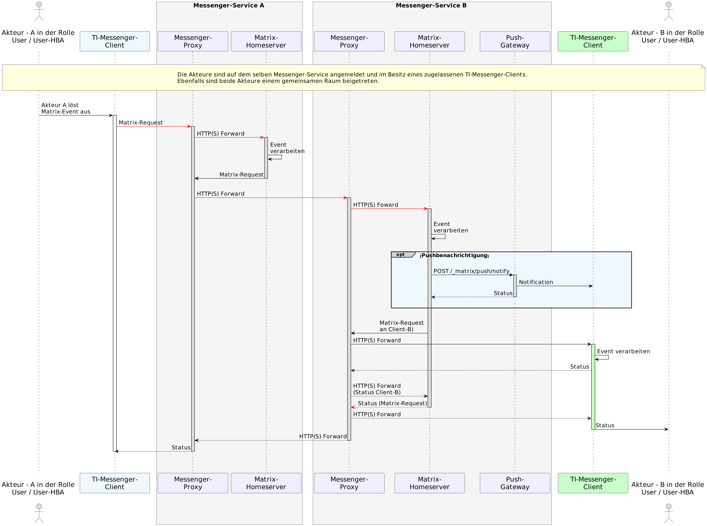
Abbildung 19: Laufzeitsicht - Austausch von Events zwischen Akteuren außerhalb einer Organisation
<=
Akzeptanzkriterien für den Anwendungsfall: Austausch von Nachrichten zwischen Akteuren außerhalb einer Organisation (AF_10062)
ML-123665
Der Messenger-Proxy des Senders prüft die Domain des Empfängers auf Zugehörigkeit zur TI-Messenger-Föderation.
<=
ML-123666
Der Messenger-Proxy des Empfängers prüft die Domain des Senders auf Zugehörigkeit zur TI-Messenger-Föderation.
<=
ML-123667
Der Matrix-Homeserver des Empfängers löst eine Benachrichtigung des Messenger-Clients über sein Push-Gateway aus.
<=
ML-123668
Die Nachricht wird dem Empfänger im gemeinsamen Raum angezeigt.
<=
ML-132593
Die Rohdaten wurden entsprechend der Rohdatendefinition gemäß [gemSpec_TI-Messenger-FD#Betrieb] für den TI-Messenger-Fachdienst erfolgreich erfasst und an die definierte Schnittstelle der Rohdatenerfassung versendet. <=
| Kürzel |
Erläuterung |
|---|---|
| AD | Active Directory |
| AF | Anwendungsfall |
| AZPD | Anbieter zentrale Plattformdienste |
| FHIR | Fast Healthcare Interoperable Resources |
| HBA | Heilberufsausweis |
| HTTP | Hypertext Transfer Protocol |
| IDP | Identity Provider |
| JSON | JavaScript Object Notation |
| JWT | JSON Web Token |
| LDAP | Lightweight Directory Access Protocol |
| LE | Leistungserbringer |
| MXID | Matrix-User-ID |
| OAuth | Open Authorization |
| PTA | Pharmazeutisch-technischer Assistent |
| REST | Representational State Transfer |
| SMC-B | Institutionenkarte (Security Module Card Typ B) |
| SMC-B ORG | Security Module Card für Organisationen |
| SPOC | Single Point of Contact |
| SSO | Single Sign-on |
| TI | Telematikinfrastruktur |
| TI-ITSM | IT-Service-Management der TI |
| TI-M | TI-Messenger |
| TSP | Trust Service Provider |
| VZD | Verzeichnisdienst |
| Begriff | Erläuterung |
|---|---|
| MXID | eindeutige Identifikation eines TI-Messenger Teilnehmers (Matrix-User-ID) |
| on-premise |
das Produkt wird auf eigener oder gemieteter Hardware betrieben |
| Third-Party | Drittanbieter, der Zusatzleistungen oder Komponenten beisteuert |
Das Glossar wird als eigenständiges Dokument (vgl. [gemGlossar]) zur Verfügung gestellt.
Die nachfolgende Tabelle enthält die Bezeichnung der in dem vorliegenden Dokument referenzierten Dokumente der gematik zur Telematikinfrastruktur. Der mit der vorliegenden Version korrelierende Entwicklungsstand dieser Konzepte und Spezifikationen wird pro Release in einer Dokumentenlandkarte definiert; Version und Stand der referenzierten Dokumente sind daher in der nachfolgenden Tabelle nicht aufgeführt. Deren zu diesem Dokument jeweils gültige Versionsnummern sind in der aktuellen, von der gematik veröffentlichten Dokumentenlandkarte enthalten, in der die vorliegende Version aufgeführt wird.
| [Quelle] |
Herausgeber: Titel |
|---|---|
| [api-messenger] | gematik: api-ti-messenger https://github.com/gematik/api-ti-messenger/ |
| [api-vzd] | gematik: Verzeichnisdienst der Telematikinfrastruktur https://github.com/gematik/api-vzd |
| [gemKPT_Betr] | gematik: Betriebskonzept Online-Produktivbetrieb |
| [gemKPT_TI_Messenger] |
gematik: Konzeptpapier TI-Messenger |
| [gemSpec_IDP_Dienst] | gematik: Spezifikation Identity Provider-Dienst |
| [gemSpec_TI-Messenger-FD] | gematik: Spezifikation TI-Messenger-Fachdienst |
| [gemSpec_VZD_FHIR_Directory] | gematik: Spezifikation Verzeichnisdienst FHIR-Directory |
| [Quelle] |
Herausgeber (Erscheinungsdatum): Titel |
|---|---|
| [Client-Server API] | Matrix Foundation: Matrix Specification - Client-Server API https://spec.matrix.org/v1.3/client-server-api/ |
| [FHIR] | HL7 FHIR Dokumentation https://www.hl7.org/fhir/documentation.html |
| [gematik Authenticator] | gematik Authenticator https://cloud.gematik.de/index.php/s/23ebxa75z3s7zGt?path=%2Fv2.1.0 |
| [Matrix Bots] | Matrix Bot Implementierungen https://matrix.org/bots/ |
| [Matrix Specification] | Matrix Foundation: Matrix Specification https://spec.matrix.org/v1.3/ |
| [OpenID] | OpenID Foundation https://openid.net/developers/specs/ |
| [Push Gateway API] |
Matrix Foundation: Matrix Specification - Push Gateway API https://spec.matrix.org/v1.3/push-gateway-api/ |
| [RFC 8225] | IETF https://datatracker.ietf.org/doc/html/rfc8225 |
| [Server-Server API] | Matrix Foundation: Matrix Specification - Server-Server API https://spec.matrix.org/v1.3/server-server-api/ |
Die folgende Abbildung beschreibt, wie ein Akteur im VZD-FHIR-Directory nach HealthcareService- und PractitionerRole Ressourcen sucht. Dies setzt eine erfolgreiche Anmeldung des Akteurs an einem Messenger-Service voraus. Der dargestellte Ablauf zeigt alle prinzipiell notwendigen Kommunikationsbeziehungen. Weitergehende Informationen zum Ablauf sind in der [gemSpec_VZD_FHIR_Directory] zu finden.
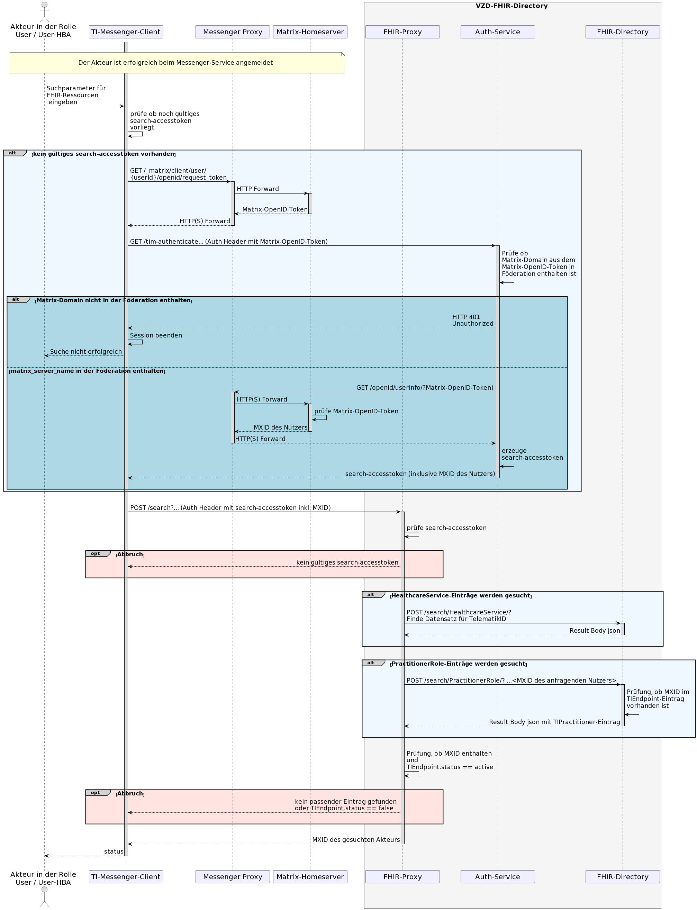
Abbildung 20: Laufzeitansicht - Einträge im VZD-FHIR-Directory suchen
Die folgende Abbildung beschreibt, wie der Messenger-Proxy seine lokal vorgehaltene Föderationsliste aktualisiert. Für die Aktualisierung der Föderationsliste MUSS der Messenger-Proxy diese beim Registrierungs-Dienst seines TI-Messenger-Fachdienstes anfragen. Die Häufigkeit der Anfrage einer neuen Liste wird durch den Anbieter festgelegt, Ziel sollte eine möglichst aktuelle Föderationsliste sein (mindestens jedoch einmal am Tag). Hierbei übergibt der Messenger-Proxy die durch ihn gespeicherte Version der Föderationsliste im Aufruf an den Registrierungs-Dienst. Bei Übereinstimmung der Version wird für den Messenger-Proxy keine neue Föderationsliste durch den Registrierungs-Dienst bereitgestellt. Ist die Version größer als die vom Messenger-Proxy übergebene, dann wird durch den Registrierungs-Dienst eine aktualisierte Föderationsliste zur Verfügung gestellt. Bei jeder Anfrage eines Messenger-Proxys beim Registrierungs-Dienst nach einer aktuellen Föderationsliste MUSS auch der Registrierungs-Dienst die Aktualität beim FHIR-Proxy prüfen indem er die von ihm gespeicherte Version der Föderationsliste beim Aufruf am FHIR-Proxy übergibt. Ein Download der Föderationsliste ist nur notwendig, wenn eine neuere Version auf dem FHIR-Proxy existiert. Die Struktur der Föderationsliste ist in [gemSpec_VZD_FHIR_Directory] beschrieben. Nach dem Abruf der Föderationsliste vom Registrierungs-Dienst, durch den Messenger Proxy, MUSS dieser die Signatur der Föderationsliste prüfen.
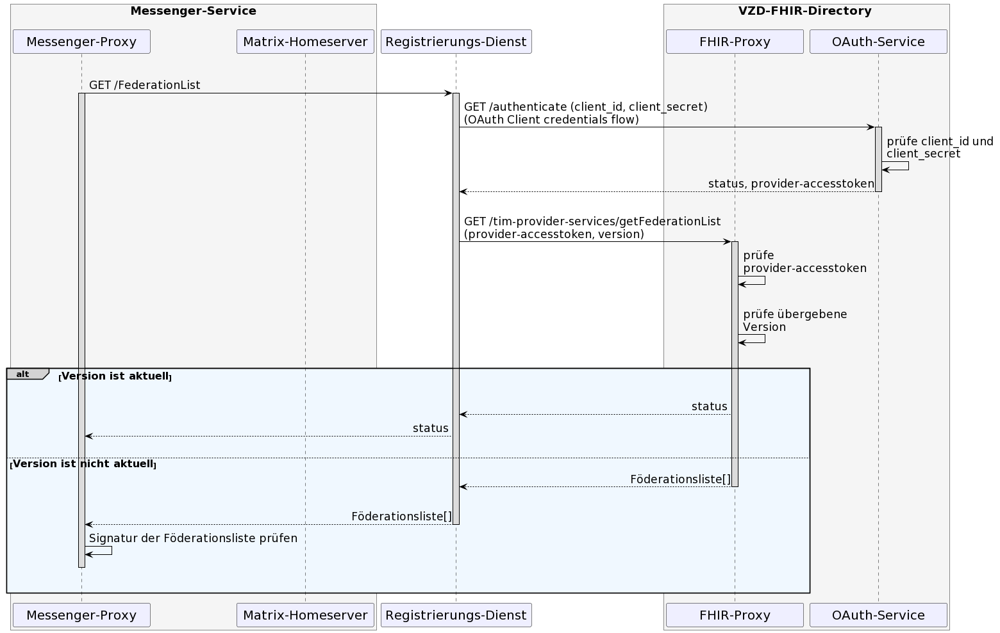
Abbildung 21: Laufzeitansicht - Aktualisierung der Föderationsliste
Die folgende Abbildung beschreibt, wie die Berechtigungsprüfung eingehender Matrix-Anfragen am Messenger-Proxy erfolgen MUSS. Das Berechtigungskonzept basiert auf einer dreistufigen Prüfung, die in Kapitel "Berechtigungskonzept" beschrieben ist. Es wird auf die Erwähnung notwendiger Authentifizierungen an dieser Stelle verzichtet.
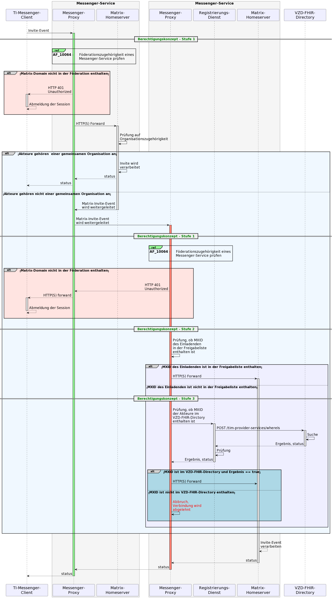
Abbildung 22: Laufzeitansicht - Stufen der Berechtigungsprüfung